Table of Contents
13. Other Hypothesis Tests
13.1. The t-Test
13.1.1. The t-Test
13.1.2. The t-Distribution
13.1.3. Assumptions
13.1.4. t-Test for One Sample
13.1.5. t-Test for Two Samples: Independent and Overlapping
13.1.6. t-Test for Two Samples: Paired
13.1.7. Calculations for the t-Test: One Sample
13.1.8. Calculations for the t-Test: Two Samples
13.1.9. Multivariate Testing
13.1.10. Alternatives to the t-Test
13.1.11. Cohen's d
13.2. The Chi-Squared Test
13.2.1. Categorical Data and the Multinomial Experiment
13.2.2. Structure of the Chi-Squared Test
13.2.3. How Fisher Used the Chi-Squared Test
13.2.4. Goodness of Fit
13.2.5. Inferences of Correlation and Regression
13.2.6. Example: Test for Goodness of Fit
13.2.7. Example: Test for Independence
13.3. Tests for Ranked Data
13.3.1. When to Use These Tests
13.3.2. Mann-Whitney U-Test
13.3.3. Wilcoxon t-Test
13.3.4. Kruskal-Wallis H-Test
13.5. Nonparametric Statistics
13.5.1. Distribution-Free Tests
13.5.2. Sign Test
13.5.3. Single-Population Inferences
13.5.4. Comparing Two Populations: Independent Samples
13.5.5. Comparing Two Populations: Paired Difference Experiment
13.5.6. Comparing Three or More Populations: Randomized Block Design
13.5.7. Rank Correlation
13. Other Hypothesis Tests
13.1. The t-Test
13.1.1. The t-Test
A t-test is any statistical hypothesis test in which the test statistic follows a Student's t-distribution if the null hypothesis is supported.
Learning Objective
Outline the appropriate uses of t-tests in Student's t-distribution
Key Points
- The t-statistic was introduced in 1908 by William Sealy Gosset, a chemist working for the Guinness brewery in Dublin, Ireland.
- The t-test can be used to determine if two sets of data are significantly different from each other.
- The t-test is most commonly applied when the test statistic would follow a normal distribution if the value of a scaling term in the test statistic were known.
Key Terms
- t-test
- Any statistical hypothesis test in which the test statistic follows a Student's t-distribution if the null hypothesis is supported.
- Student's t-distribution
- A family of continuous probability distributions that arises when estimating the mean of a normally distributed population in situations where the sample size is small and population standard deviation is unknown.
A t-test is any statistical hypothesis test in which the test statistic follows a Student's t-distribution if the null hypothesis is supported. It can be used to determine if two sets of data are significantly different from each other, and is most commonly applied when the test statistic would follow a normal distribution if the value of a scaling term in the test statistic were known. When the scaling term is unknown and is replaced by an estimate based on the data, the test statistic (under certain conditions) follows a Student's t-distribution.
History
The t-statistic was introduced in 1908 by William Sealy Gosset (shown in ), a chemist working for the Guinness brewery in Dublin, Ireland. Gosset had been hired due to Claude Guinness's policy of recruiting the best graduates from Oxford and Cambridge to apply biochemistry and statistics to Guinness's industrial processes. Gosset devised the t-test as a cheap way to monitor the quality of stout. The t-test work was submitted to and accepted in the journal Biometrika, the journal that Karl Pearson had co-founded and for which he served as the Editor-in-Chief. The company allowed Gosset to publish his mathematical work, but only if he used a pseudonym (he chose "Student"). Gosset left Guinness on study-leave during the first two terms of the 1906-1907 academic year to study in Professor Karl Pearson's Biometric Laboratory at University College London. Gosset's work on the t-test was published in Biometrika in 1908.
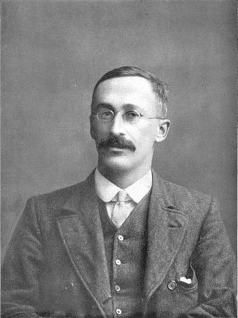{kind=link}
Writing under the pseudonym "Student", Gosset published his work on the t-test in 1908.
Uses
Among the most frequently used t-tests are:
- A one-sample location test of whether the mean of a normally distributed population has a value specified in a null hypothesis.
- A two-sample location test of a null hypothesis that the means of two normally distributed populations are equal. All such tests are usually called Student's t-tests, though strictly speaking that name should only be used if the variances of the two populations are also assumed to be equal. The form of the test used when this assumption is dropped is sometimes called Welch's t-test. These tests are often referred to as "unpaired" or "independent samples" t-tests, as they are typically applied when the statistical units underlying the two samples being compared are non-overlapping.
- A test of a null hypothesis that the difference between two responses measured on the same statistical unit has a mean value of zero. For example, suppose we measure the size of a cancer patient's tumor before and after a treatment. If the treatment is effective, we expect the tumor size for many of the patients to be smaller following the treatment. This is often referred to as the "paired" or "repeated measures" t-test.
- A test of whether the slope of a regression line differs significantly from 0.
13.1.2. The t-Distribution
Student's $t$ -distribution arises in estimation problems where the goal is to estimate an unknown parameter when the data are observed with additive errors.
Learning Objective
Calculate the Student's
Key Points
- Student's $t$ -distribution (or simply the $t$ -distribution) is a family of continuous probability distributions that arises when estimating the mean of a normally distributed population in situations where the sample size is small and population standard deviation is unknown.
- The $t$ -distribution (for $k$ ) can be defined as the distribution of the location of the true mean, relative to the sample mean and divided by the sample standard deviation, after multiplying by the normalizing term.
- The $t$ -distribution with $n-1$ degrees of freedom is the sampling distribution of the $t$ -value when the samples consist of independent identically distributed observations from a normally distributed population.
- As the number of degrees of freedom grows, the $t$ -distribution approaches the normal distribution with mean $0$ and variance $1$ .
Key Terms
- confidence interval
- A type of interval estimate of a population parameter used to indicate the reliability of an estimate.
- Student's t-distribution
- A family of continuous probability distributions that arises when estimating the mean of a normally distributed population in situations where the sample size is small and population standard deviation is unknown.
- chi-squared distribution
- A distribution with
$k$ degrees of freedom is the distribution of a sum of the squares of$k$ independent standard normal random variables.
Student's $t$ -distribution (or simply the $t$ -distribution) is a family of continuous probability distributions that arises when estimating the mean of a normally distributed population in situations where the sample size is small and population standard deviation is unknown. It plays a role in a number of widely used statistical analyses, including the Student's $t$ -test for assessing the statistical significance of the difference between two sample means, the construction of confidence intervals for the difference between two population means, and in linear regression analysis.
If we take $k$ samples from a normal distribution with fixed unknown mean and variance, and if we compute the sample mean and sample variance for these $k$ samples, then the $t$ -distribution (for $k$ ) can be defined as the distribution of the location of the true mean, relative to the sample mean and divided by the sample standard deviation, after multiplying by the normalizing term $\sqrt { n }$ , where $n$ is the sample size. In this way, the $t$ -distribution can be used to estimate how likely it is that the true mean lies in any given range.
The $t$ -distribution with $n - 1$ degrees of freedom is the sampling distribution of the $t$ -value when the samples consist of independent identically distributed observations from a normally distributed population. Thus, for inference purposes, $t$ is a useful "pivotal quantity" in the case when the mean and variance ($\mu$ , $\sigma^2$ ) are unknown population parameters, in the sense that the $t$ -value has then a probability distribution that depends on neither $\mu$ nor $\sigma^2$ .
History
The $t$ -distribution was first derived as a posterior distribution in 1876 by Helmert and Lüroth. In the English-language literature it takes its name from William Sealy Gosset's 1908 paper in Biometrika under the pseudonym "Student." Gosset worked at the Guinness Brewery in Dublin, Ireland, and was interested in the problems of small samples, for example of the chemical properties of barley where sample sizes might be as small as three participants. Gosset's paper refers to the distribution as the "frequency distribution of standard deviations of samples drawn from a normal population." It became well known through the work of Ronald A. Fisher, who called the distribution "Student's distribution" and referred to the value as $t$ .
Distribution of a Test Statistic
Student's $t$ -distribution with $\nu$ degrees of freedom can be defined as the distribution of the random variable $T$ :
where:
- $Z$ is normally distributed with expected value $0$ and variance $1$
- V has a chi-squared distribution with $\nu$ degrees of freedom
- $Z$ and $V$ are independent
A different distribution is defined as that of the random variable defined, for a given constant $\mu$ , by:
This random variable has a noncentral $t$ -distribution with noncentrality parameter $\mu$ . This distribution is important in studies of the power of Student's $t$ -test.
Shape
The probability density function is symmetric; its overall shape resembles the bell shape of a normally distributed variable with mean $0$ and variance $1$ , except that it is a bit lower and wider. In more technical terms, it has heavier tails, meaning that it is more prone to producing values that fall far from its mean. This makes it useful for understanding the statistical behavior of certain types of ratios of random quantities, in which variation in the denominator is amplified and may produce outlying values when the denominator of the ratio falls close to zero. As the number of degrees of freedom grows, the $t$ -distribution approaches the normal distribution with mean $0$ and variance $1$ .
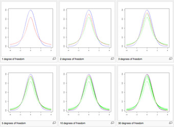{kind=link}
These images show the density of the $t$ -distribution (red) for increasing values of $\nu$ (1, 2, 3, 5, 10, and 30 degrees of freedom). The normal distribution is shown as a blue line for comparison. Previous plots are shown in green. Note that the $t$ -distribution becomes closer to the normal distribution as $\nu$ increases.
Uses
Student's $t$ -distribution arises in a variety of statistical estimation problems where the goal is to estimate an unknown parameter, such as a mean value, in a setting where the data are observed with additive errors. If (as in nearly all practical statistical work) the population standard deviation of these errors is unknown and has to be estimated from the data, the $t$ -distribution is often used to account for the extra uncertainty that results from this estimation. In most such problems, if the standard deviation of the errors were known, a normal distribution would be used instead of the $t$ -distribution.
Confidence intervals and hypothesis tests are two statistical procedures in which the quantiles of the sampling distribution of a particular statistic (e.g., the standard score) are required. In any situation where this statistic is a linear function of the data, divided by the usual estimate of the standard deviation, the resulting quantity can be rescaled and centered to follow Student's $t$ -distribution. Statistical analyses involving means, weighted means, and regression coefficients all lead to statistics having this form.
A number of statistics can be shown to have $t$ -distributions for samples of moderate size under null hypotheses that are of interest, so that the $t$ -distribution forms the basis for significance tests. For example, the distribution of Spearman's rank correlation coefficient $\rho$ , in the null case (zero correlation) is well approximated by the $t$ -distribution for sample sizes above about $20$ .
13.1.3. Assumptions
Assumptions of a $t$ -test depend on the population being studied and on how the data are sampled.
Learning Objective
Explain the underlying assumptions of a
Key Points
- Most $t$ -test statistics have the form $t=\frac{Z}{s}$ , where $Z$ and $s$ are functions of the data.
- Typically, $Z$ is designed to be sensitive to the alternative hypothesis (i.e., its magnitude tends to be larger when the alternative hypothesis is true), whereas $s$ is a scaling parameter that allows the distribution of $t$ to be determined.
- The assumptions underlying a $t$ -test are that: $Z$ follows a standard normal distribution under the null hypothesis, and $s^2$ follows a $\chi^2$ distribution with $p$ degrees of freedom under the null hypothesis, where $p$ is a positive constant.
- $Z$ and $s$ are independent.
Key Terms
- scaling parameter
- A special kind of numerical parameter of a parametric family of probability distributions; the larger the scale parameter, the more spread out the distribution.
- alternative hypothesis
- a rival hypothesis to the null hypothesis, whose likelihoods are compared by a statistical hypothesis test
- t-test
- Any statistical hypothesis test in which the test statistic follows a Student's
$t$ -distribution if the null hypothesis is supported.
Most $t$ -test statistics have the form $t=\frac{Z}{s}$ , where $Z$ and $s$ are functions of the data. Typically, $Z$ is designed to be sensitive to the alternative hypothesis (i.e., its magnitude tends to be larger when the alternative hypothesis is true), whereas $s$ is a scaling parameter that allows the distribution of $t$ to be determined.
As an example, in the one-sample $t$ -test:
where $\bar { X }$ is the sample mean of the data, $n$ is the sample size, and $\hat { \sigma }$ is the population standard deviation of the data; $s$ in the one-sample $t$ -test is $\hat { \sigma } /\sqrt { n }$ , where $\hat { \sigma }$ is the sample standard deviation.
The assumptions underlying a $t$ -test are that:
- $Z$ follows a standard normal distribution under the null hypothesis.
- $s^2$ follows a $\chi^2$ distribution with $p$ degrees of freedom under the null hypothesis, where $p$ is a positive constant.
- $Z$ and $s$ are independent.
In a specific type of $t$ -test, these conditions are consequences of the population being studied, and of the way in which the data are sampled. For example, in the $t$ -test comparing the means of two independent samples, the following assumptions should be met:
- Each of the two populations being compared should follow a normal distribution. This can be tested using a normality test, or it can be assessed graphically using a normal quantile plot.
- If using Student's original definition of the $t$ -test, the two populations being compared should have the same variance (testable using the $F$ -test or assessable graphically using a Q-Q plot). If the sample sizes in the two groups being compared are equal, Student's original $t$ -test is highly robust to the presence of unequal variances. Welch's $t$ -test is insensitive to equality of the variances regardless of whether the sample sizes are similar.
- The data used to carry out the test should be sampled independently from the two populations being compared. This is, in general, not testable from the data, but if the data are known to be dependently sampled (i.e., if they were sampled in clusters), then the classical $t$ -tests discussed here may give misleading results.
13.1.4. t-Test for One Sample
The $t$ -test is the most powerful parametric test for calculating the significance of a small sample mean.
Learning Objective
Derive the degrees of freedom for a t-test
Key Points
- A one sample $t$ -test has the null hypothesis, or$H_0$ , of $\mu = c$ .
- The $t$ -test is the small-sample analog of the $z$ test, which is suitable for large samples.
- For a $t$ -test the degrees of freedom of the single mean is $n-1$ because only one population parameter (the population mean) is being estimated by a sample statistic (the sample mean).
Key Terms
- t-test
- Any statistical hypothesis test in which the test statistic follows a Student's
$t$ -distribution if the null hypothesis is supported. - degrees of freedom
- any unrestricted variable in a frequency distribution
The $t$ -test is the most powerful parametric test for calculating the significance of a small sample mean. A one sample $t$ -test has the null hypothesis, or $H_0$ , that the population mean equals the hypothesized value. Expressed formally:
where the Greek letter $\mu$ represents the population mean and $c$ represents its assumed (hypothesized) value. The $t$ -test is the small sample analog of the $z$ -test, which is suitable for large samples. A small sample is generally regarded as one of size $n < 30$ .
In order to perform a $t$ -test, one first has to calculate the degrees of freedom. This quantity takes into account the sample size and the number of parameters that are being estimated. Here, the population parameter $\mu$ is being estimated by the sample statistic $\bar { X }$ , the mean of the sample data. For a $t$ -test the degrees of freedom of the single mean is $n-1$ . This is because only one population parameter (the population mean) is being estimated by a sample statistic (the sample mean).
Example
A college professor wants to compare her students' scores with the national average. She chooses a simple random sample of $20$ students who score an average of $50.2$ on a standardized test. Their scores have a standard deviation of $2.5$ . The national average on the test is a $60$ . She wants to know if her students scored significantly lower than the national average.
1. First, state the problem in terms of a distribution and identify the parameters of interest. Mention the sample. We will assume that the scores ( $\bar{X}$ ) of the students in the professor's class are approximately normally distributed with unknown parameters $\mu$ and $\sigma$ .
2. State the hypotheses in symbols and words:
i.e.: The null hypothesis is that her students scored on par with the national average.
i.e.: The alternative hypothesis is that her students scored lower than the national average.
3. Identify the appropriate test to use. Since we have a simple random sample of small size and do not know the standard deviation of the population, we will use a one-sample $t$ -test. The formula for the $t$ -statistic $T$ for a one-sample test is as follows:
$T=\dfrac { \bar { X } -60 }{ S/\sqrt { 20 } }$ ,
where $\bar { X }$ is the sample mean and $S$ is the sample standard deviation. The standard deviation of the sample divided by the square root of the sample size is known as the "standard error" of the sample.
4. State the distribution of the test statistic under the null hypothesis. Under $H_0$ the statistic $T$ will follow a Student's distribution with $19$ degrees of freedom: $T\sim \tau \cdot (20-1)$ .
5. Compute the observed value $t$ of the test statistic $T$ , by entering the values, as follows:
6. Determine the so-called $p$ -value of the value $t$ of the test statistic $T$ . We will reject the null hypothesis for too-small values of $T$ , so we compute the left $p$ -value:
The Student's distribution gives $T\left( 19 \right) =1.729$ at probabilities $0.95$ and degrees of freedom $19$ . The $p$ -value is approximated at $1.777$ .
7. Lastly, interpret the results in the context of the problem. The $p$ -value indicates that the results almost certainly did not happen by chance and we have sufficient evidence to reject the null hypothesis. This is to say, the professor's students did score significantly lower than the national average.
13.1.5. t-Test for Two Samples: Independent and Overlapping
Two-sample t-tests for a difference in mean involve independent samples, paired samples, and overlapping samples.
Learning Objective
Contrast paired and unpaired samples in a two-sample t-test
Key Points
- For the null hypothesis, the observed t-statistic is equal to the difference between the two sample means divided by the standard error of the difference between the sample means.
- The independent samples t-test is used when two separate sets of independent and identically distributed samples are obtained—one from each of the two populations being compared.
- An overlapping samples t-test is used when there are paired samples with data missing in one or the other samples.
Key Terms
- blocking
- A schedule for conducting treatment combinations in an experimental study such that any effects on the experimental results due to a known change in raw materials, operators, machines, etc., become concentrated in the levels of the blocking variable.
- null hypothesis
- A hypothesis set up to be refuted in order to support an alternative hypothesis; presumed true until statistical evidence in the form of a hypothesis test indicates otherwise.
The two sample t-test is used to compare the means of two independent samples. For the null hypothesis, the observed t-statistic is equal to the difference between the two sample means divided by the standard error of the difference between the sample means. If the two population variances can be assumed equal, the standard error of the difference is estimated from the weighted variance about the means. If the variances cannot be assumed equal, then the standard error of the difference between means is taken as the square root of the sum of the individual variances divided by their sample size. In the latter case the estimated t-statistic must either be tested with modified degrees of freedom, or it can be tested against different critical values. A weighted t-test must be used if the unit of analysis comprises percentages or means based on different sample sizes.
The two-sample t-test is probably the most widely used (and misused) statistical test. Comparing means based on convenience sampling or non-random allocation is meaningless. If, for any reason, one is forced to use haphazard rather than probability sampling, then every effort must be made to minimize selection bias.
Unpaired and Overlapping Two-Sample T-Tests
Two-sample t-tests for a difference in mean involve independent samples, paired samples and overlapping samples. Paired t-tests are a form of blocking, and have greater power than unpaired tests when the paired units are similar with respect to "noise factors" that are independent of membership in the two groups being compared. In a different context, paired t-tests can be used to reduce the effects of confounding factors in an observational study.
Independent Samples
The independent samples t-test is used when two separate sets of independent and identically distributed samples are obtained, one from each of the two populations being compared. For example, suppose we are evaluating the effect of a medical treatment, and we enroll 100 subjects into our study, then randomize 50 subjects to the treatment group and 50 subjects to the control group. In this case, we have two independent samples and would use the unpaired form of the t-test .
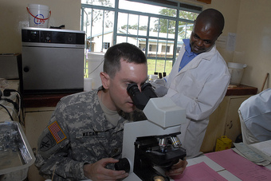{kind=link}
Medical experimentation may utilize any two independent samples t-test.
Overlapping Samples
An overlapping samples t-test is used when there are paired samples with data missing in one or the other samples (e.g., due to selection of "I don't know" options in questionnaires, or because respondents are randomly assigned to a subset question). These tests are widely used in commercial survey research (e.g., by polling companies) and are available in many standard crosstab software packages.
13.1.6. t-Test for Two Samples: Paired
Paired-samples $t$ -tests typically consist of a sample of matched pairs of similar units, or one group of units that has been tested twice.
Learning Objective
Criticize the shortcomings of paired-samples
Key Points
- A paired-difference test uses additional information about the sample that is not present in an ordinary unpaired testing situation, either to increase the statistical power or to reduce the effects of confounders.
- $t$ -tests are carried out as paired difference tests for normally distributed differences where the population standard deviation of the differences is not known.
- A paired samples $t$ -test based on a "matched-pairs sample" results from an unpaired sample that is subsequently used to form a paired sample, by using additional variables that were measured along with the variable of interest.
- Paired samples $t$ -tests are often referred to as "dependent samples $t$ -tests" (as are $t$ -tests on overlapping samples).
Key Terms
- paired difference test
- A type of location test that is used when comparing two sets of measurements to assess whether their population means differ.
- confounding
- Describes a phenomenon in which an extraneous variable in a statistical model correlates (positively or negatively) with both the dependent variable and the independent variable; confounder = noun form.
Paired Difference Test
In statistics, a paired difference test is a type of location test used when comparing two sets of measurements to assess whether their population means differ. A paired difference test uses additional information about the sample that is not present in an ordinary unpaired testing situation, either to increase the statistical power or to reduce the effects of confounders. $t$ -tests are carried out as paired difference tests for normally distributed differences where the population standard deviation of the differences is not known.
Paired-Samples $t$ -Test
Paired samples $t$ -tests typically consist of a sample of matched pairs of similar units, or one group of units that has been tested twice (a "repeated measures" $t$ -test).
A typical example of the repeated measures t-test would be where subjects are tested prior to a treatment, say for high blood pressure, and the same subjects are tested again after treatment with a blood-pressure lowering medication . By comparing the same patient's numbers before and after treatment, we are effectively using each patient as their own control. That way the correct rejection of the null hypothesis (here: of no difference made by the treatment) can become much more likely, with statistical power increasing simply because the random between-patient variation has now been eliminated.
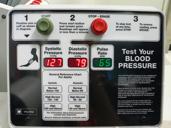{kind=link}
A typical example of a repeated measures $t$ -test is in the treatment of patients with high blood pressure to determine the effectiveness of a particular medication.
Note, however, that an increase of statistical power comes at a price: more tests are required, each subject having to be tested twice. Because half of the sample now depends on the other half, the paired version of Student's $t$ -test has only $\frac{n}{2-1}$ degrees of freedom (with $n$ being the total number of observations. Pairs become individual test units, and the sample has to be doubled to achieve the same number of degrees of freedom.
A paired-samples $t$ -test based on a "matched-pairs sample" results from an unpaired sample that is subsequently used to form a paired sample, by using additional variables that were measured along with the variable of interest. The matching is carried out by identifying pairs of values consisting of one observation from each of the two samples, where the pair is similar in terms of other measured variables. This approach is sometimes used in observational studies to reduce or eliminate the effects of confounding factors.
Paired-samples $t$ -tests are often referred to as "dependent samples $t$ -tests" (as are $t$ -tests on overlapping samples).
13.1.7. Calculations for the t-Test: One Sample
The following is a discussion on explicit expressions that can be used to carry out various $t$ -tests.
Learning Objective
Assess a null hypothesis in a one-sample
Key Points
- In each case, the formula for a test statistic that either exactly follows or closely approximates a $t$ -distribution under the null hypothesis is given.
- Also, the appropriate degrees of freedom are given in each case.
- Once a $t$ -value is determined, a $p$ -value can be found using a table of values from Student's $t$ -distribution.
- If the calculated $p$ -value is below the threshold chosen for statistical significance (usually the $0.10$ , the $0.05$ , or $0.01$ level), then the null hypothesis is rejected in favor of the alternative hypothesis.
Key Terms
- standard error
- A measure of how spread out data values are around the mean, defined as the square root of the variance.
- p-value
- The probability of obtaining a test statistic at least as extreme as the one that was actually observed, assuming that the null hypothesis is true.
The following is a discussion on explicit expressions that can be used to carry out various $t$ -tests. In each case, the formula for a test statistic that either exactly follows or closely approximates a $t$ -distribution under the null hypothesis is given. Also, the appropriate degrees of freedom are given in each case. Each of these statistics can be used to carry out either a one-tailed test or a two-tailed test.
Once a $t$ -value is determined, a $p$ -value can be found using a table of values from Student's $t$ -distribution. If the calculated $p$ -value is below the threshold chosen for statistical significance (usually the $0.10$ , the $0.05$ , or $0.01$ level), then the null hypothesis is rejected in favor of the alternative hypothesis.
One-Sample T-Test
In testing the null hypothesis that the population mean is equal to a specified value $\mu_0$ , one uses the statistic:
where $\bar { x }$ is the sample mean, $s$ is the sample standard deviation of the sample and $n$ is the sample size. The degrees of freedom used in this test is $n-1$ .
Slope of a Regression
Suppose one is fitting the model:
where $x_i, i=1, \cdots, n$ are known, $\alpha$ and $\beta$ are unknown, and $\varepsilon_i$ are independent identically normally distributed random errors with expected value $0$ and unknown variance $\sigma^2$ , and $Y_i,i=1,\cdots,n$ are observed. It is desired to test the null hypothesis that the slope $\beta$ is equal to some specified value $\beta_0$ (often taken to be $0$ , in which case the hypothesis is that $x$ and $y$ are unrelated). Let $\hat{\alpha}$ and $\hat{\beta}$ be least-squares estimators, and let $SE_\hat{\alpha}$ and $SE_\hat{\beta}$ , respectively, be the standard errors of those least-squares estimators. Then,
has a $t$ -distribution with $n - 2$ degrees of freedom if the null hypothesis is true. The standard error of the slope coefficient is:
can be written in terms of the residuals $\hat{\varepsilon}_i$ :
Therefore, the sum of the squares of residuals, or $SSR$ , is given by:
Then, the $t$ -score is given by:
13.1.8. Calculations for the t-Test: Two Samples
The following is a discussion on explicit expressions that can be used to carry out various t-tests.
Learning Objective
Calculate the t value for different types of sample sizes and variances in an independent two-sample t-test
Key Points
- A two-sample t-test for equal sample sizes and equal variances is only used when both the two sample sizes are equal and it can be assumed that the two distributions have the same variance.
- A two-sample t-test for unequal sample sizes and equal variances is used only when it can be assumed that the two distributions have the same variance.
- A two-sample t-test for unequal (or equal) sample sizes and unequal variances (also known as Welch's t-test) is used only when the two population variances are assumed to be different and hence must be estimated separately.
Key Terms
- pooled variance
- A method for estimating variance given several different samples taken in different circumstances where the mean may vary between samples but the true variance is assumed to remain the same.
- degrees of freedom
- any unrestricted variable in a frequency distribution
The following is a discussion on explicit expressions that can be used to carry out various t-tests. In each case, the formula for a test statistic that either exactly follows or closely approximates a t-distribution under the null hypothesis is given. Also, the appropriate degrees of freedom are given in each case. Each of these statistics can be used to carry out either a one-tailed test or a two-tailed test.
Once a t-value is determined, a p-value can be found using a table of values from Student's t-distribution. If the calculated p-value is below the threshold chosen for statistical significance (usually the 0.10, the 0.05, or 0.01 level), then the null hypothesis is rejected in favor of the alternative hypothesis.
Independent Two-Sample T-Test
Equal Sample Sizes, Equal Variance
This test is only used when both:
- the two sample sizes (that is, the number, n, of participants of each group) are equal; and
- it can be assumed that the two distributions have the same variance.
Violations of these assumptions are discussed below. The t-statistic to test whether the means are different can be calculated as follows:
$t=\frac { { \bar { X } }_{ 1 }-{ \bar { X } }_{ 2 } }{ { S }{ x }_{ 1 }{ x }_{ 2 }\cdot \sqrt { \frac { 2 }{ n } } }$ ,
where
${ S }{ x }_{ 1 }{ x }_{ 2 }=\sqrt { \frac { 1 }{ 2 } \left( { S }^{ 2 }{ x }_{ 1 }+{ S }^{ 2 }{ x }_{ 2 } \right) }$ .
Here, ${ S }{ x }_{ 1 }{ x }_{ 2 }$ is the grand standard deviation (or pooled standard deviation), 1 = group one, 2 = group two. The denominator of t is the standard error of the difference between two means.
For significance testing, the degrees of freedom for this test is 2n − 2 where n is the number of participants in each group.
Unequal Sample Sizes, Equal Variance
This test is used only when it can be assumed that the two distributions have the same variance. The t-statistic to test whether the means are different can be calculated as follows:
$t=\frac { { \bar { X } }_{ 1 }-{ \bar { X } }_{ 2 } }{ { S }{ x }_{ 1 }{ x }_{ 2 }\cdot \sqrt { \frac { 1 }{ { n }_{ 1 } } +\frac { 1 }{ { n }_{ 2 } } } }$ ,
where .
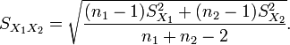{kind=link}
This is the formula for a pooled variance in a two-sample t-test with unequal sample size but equal variances.
${ S }{ x }_{ 1 }{ x }_{ 2 }$ is an estimator of the common standard deviation of the two samples: it is defined in this way so that its square is an unbiased estimator of the common variance whether or not the population means are the same. In these formulae, n = number of participants, 1 = group one, 2 = group two. n − 1 is the number of degrees of freedom for either group, and the total sample size minus two (that is, n1 + n2 − 2) is the total number of degrees of freedom, which is used in significance testing.
Unequal (or Equal) Sample Sizes, Unequal Variances
This test, also known as Welch's t-test, is used only when the two population variances are assumed to be different (the two sample sizes may or may not be equal) and hence must be estimated separately. The t-statistic to test whether the population means are different is calculated as:
where .
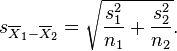{kind=link}
This is the formula for a pooled variance in a two-sample t-test with unequal or equal sample sizes but unequal variances.
Here s2 is the unbiased estimator of the variance of the two samples, ni = number of participants in group i, i=1 or 2. Note that in this case ${ { s }_{ { \bar { X } }_{ 1 }-{ \bar { X } }_{ 2 } } }^{ 2 }$ is not a pooled variance. For use in significance testing, the distribution of the test statistic is approximated as an ordinary Student's t-distribution with the degrees of freedom calculated using:
.
{kind=link}
This is the formula for calculating the degrees of freedom in Welsh's t-test.
This is known as the Welch–Satterthwaite equation. The true distribution of the test statistic actually depends (slightly) on the two unknown population variances.
13.1.9. Multivariate Testing
Hotelling's $T$ -square statistic allows for the testing of hypotheses on multiple (often correlated) measures within the same sample.
Learning Objective
Summarize Hotelling's
Key Points
- Hotelling's $T$ -squared distribution is important because it arises as the distribution of a set of statistics which are natural generalizations of the statistics underlying Student's $t$ -distribution.
- In particular, the distribution arises in multivariate statistics in undertaking tests of the differences between the (multivariate) means of different populations, where tests for univariate problems would make use of a $t$ -test.
- For a one-sample multivariate test, the hypothesis is that the mean vector ($\mu$ ) is equal to a given vector (${ \mu }_{ 0 }$ ).
- For a two-sample multivariate test, the hypothesis is that the mean vectors (${ \mu }_{ 1 }$ and ${ \mu }_{ 2 }$ ) of two samples are equal.
Key Terms
- Hotelling's T-square statistic
- A generalization of Student's
$t$ -statistic that is used in multivariate hypothesis testing. - Type I error
- An error occurring when the null hypothesis (
$H_0$ ) is true, but is rejected.
A generalization of Student's $t$ -statistic, called Hotelling's $T$ -square statistic, allows for the testing of hypotheses on multiple (often correlated) measures within the same sample. For instance, a researcher might submit a number of subjects to a personality test consisting of multiple personality scales (e.g., the Minnesota Multiphasic Personality Inventory). Because measures of this type are usually highly correlated, it is not advisable to conduct separate univariate $t$ -tests to test hypotheses, as these would neglect the covariance among measures and inflate the chance of falsely rejecting at least one hypothesis (type I error). In this case a single multivariate test is preferable for hypothesis testing. Hotelling's $T^2$ statistic follows a $T^2$ distribution.
Hotelling's $T$ -squared distribution is important because it arises as the distribution of a set of statistics which are natural generalizations of the statistics underlying Student's $t$ -distribution. In particular, the distribution arises in multivariate statistics in undertaking tests of the differences between the (multivariate) means of different populations, where tests for univariate problems would make use of a $t$ -test. It is proportional to the $F$ -distribution.
One-sample $T^2$ Test
For a one-sample multivariate test, the hypothesis is that the mean vector ($\mu$ ) is equal to a given vector (${ \mu }_{ 0 }$ ). The test statistic is defined as follows:
where $n$ is the sample size, $\bar { x }$ is the vector of column means and $S$ is a $m \times m$ sample covariance matrix.
Two-Sample T2 Test
For a two-sample multivariate test, the hypothesis is that the mean vectors (${ \mu }_{ 1 },{ \mu }_{ 2 }$ ) of two samples are equal. The test statistic is defined as:
13.1.10. Alternatives to the t-Test
When the normality assumption does not hold, a nonparametric alternative to the $t$ -test can often have better statistical power.
Learning Objective
Explain how Wilcoxon Rank Sum tests are applied to data distributions
Key Points
- The $t$ -test provides an exact test for the equality of the means of two normal populations with unknown, but equal, variances.
- The Welch's $t$ -test is a nearly exact test for the case where the data are normal but the variances may differ.
- For moderately large samples and a one-tailed test, the $t$ is relatively robust to moderate violations of the normality assumption.
- If the sample size is large, Slutsky's theorem implies that the distribution of the sample variance has little effect on the distribution of the test statistic.
- For two independent samples when the data distributions are asymmetric (that is, the distributions are skewed) or the distributions have large tails, then the Wilcoxon Rank Sum test can have three to four times higher power than the $t$ -test.
- The nonparametric counterpart to the paired-samples $t$ -test is the Wilcoxon signed-rank test for paired samples.
Key Terms
- central limit theorem
- The theorem that states: If the sum of independent identically distributed random variables has a finite variance, then it will be (approximately) normally distributed.
- Wilcoxon Rank Sum test
- A non-parametric test of the null hypothesis that two populations are the same against an alternative hypothesis, especially that a particular population tends to have larger values than the other.
- Wilcoxon signed-rank test
- A nonparametric statistical hypothesis test used when comparing two related samples, matched samples, or repeated measurements on a single sample to assess whether their population mean ranks differ (i.e., it is a paired difference test).
The $t$ -test provides an exact test for the equality of the means of two normal populations with unknown, but equal, variances. The Welch's $t$ -test is a nearly exact test for the case where the data are normal but the variances may differ. For moderately large samples and a one-tailed test, the $t$ is relatively robust to moderate violations of the normality assumption.
For exactness, the $t$ -test and $Z$ -test require normality of the sample means, and the $t$ -test additionally requires that the sample variance follows a scaled $\chi^2$ distribution, and that the sample mean and sample variance be statistically independent. Normality of the individual data values is not required if these conditions are met. By the central limit theorem, sample means of moderately large samples are often well-approximated by a normal distribution even if the data are not normally distributed. For non-normal data, the distribution of the sample variance may deviate substantially from a $\chi^2$ distribution. If the data are substantially non-normal and the sample size is small, the $t$ -test can give misleading results. However, if the sample size is large, Slutsky's theorem implies that the distribution of the sample variance has little effect on the distribution of the test statistic.
Slutsky's theorem extends some properties of algebraic operations on convergent sequences of real numbers to sequences of random variables. The theorem was named after Eugen Slutsky. The statement is as follows:
Let $\{X_n\}$ , $\{Y_n\}$ be sequences of scalar/vector/matrix random elements. If $X_n$ converges in distribution to a random element $X$ , and $Y$ converges in probability to a constant $c$ , then:
where $\overset{d}{\rightarrow}$ denotes convergence in distribution.
When the normality assumption does not hold, a nonparametric alternative to the $t$ -test can often have better statistical power. For example, for two independent samples when the data distributions are asymmetric (that is, the distributions are skewed) or the distributions have large tails, then the Wilcoxon Rank Sum test (also known as the Mann-Whitney $U$ test) can have three to four times higher power than the $t$ -test. The nonparametric counterpart to the paired samples $t$ -test is the Wilcoxon signed-rank test for paired samples.
One-way analysis of variance generalizes the two-sample $t$ -test when the data belong to more than two groups.
13.1.11. Cohen's d
Cohen's $d$ is a method of estimating effect size in a $t$ -test based on means or distances between/among means.
Learning Objective
Justify Cohen's
Key Points
- An effect size is a measure of the strength of a phenomenon (for example, the relationship between two variables in a statistical population) or a sample-based estimate of that quantity.
- An effect size calculated from data is a descriptive statistic that conveys the estimated magnitude of a relationship without making any statement about whether the apparent relationship in the data reflects a true relationship in the population.
- Cohen's $d$ is an example of a standardized measure of effect, which are used when the metrics of variables do not have intrinsic meaning, results from multiple studies are being combined, the studies use different scales, or when effect size is conveyed relative to the variability in the population.
- As in any statistical setting, effect sizes are estimated with error, and may be biased unless the effect size estimator that is used is appropriate for the manner in which the data were sampled and the manner in which the measurements were made.
- Cohen's $d$ is defined as the difference between two means divided by a standard deviation for the data: $D=\frac { { \bar { x } }_{ 1 }-{ \bar { x } }_{ 2 } }{ \sigma }$ .
Key Terms
- Cohen's d
- A measure of effect size indicating the amount of different between two groups on a construct of interest in standard deviation units.
- p-value
- The probability of obtaining a test statistic at least as extreme as the one that was actually observed, assuming that the null hypothesis is true.
Cohen's $d$ is a method of estimating effect size in a $t$ -test based on means or distances between/among means . An effect size is a measure of the strength of a phenomenon—for example, the relationship between two variables in a statistical population (or a sample-based estimate of that quantity). An effect size calculated from data is a descriptive statistic that conveys the estimated magnitude of a relationship without making any statement about whether the apparent relationship in the data reflects a true relationship in the population. In that way, effect sizes complement inferential statistics such as $p$ -values. Among other uses, effect size measures play an important role in meta-analysis studies that summarize findings from a specific area of research, and in statistical power analyses.

Plots of the densities of Gaussian distributions showing different Cohen's effect sizes.
The concept of effect size already appears in everyday language. For example, a weight loss program may boast that it leads to an average weight loss of 30 pounds. In this case, 30 pounds is an indicator of the claimed effect size. Another example is that a tutoring program may claim that it raises school performance by one letter grade. This grade increase is the claimed effect size of the program. These are both examples of "absolute effect sizes," meaning that they convey the average difference between two groups without any discussion of the variability within the groups.
Reporting effect sizes is considered good practice when presenting empirical research findings in many fields. The reporting of effect sizes facilitates the interpretation of the substantive, as opposed to the statistical, significance of a research result. Effect sizes are particularly prominent in social and medical research.
Cohen's $d$ is an example of a standardized measure of effect. Standardized effect size measures are typically used when the metrics of variables being studied do not have intrinsic meaning (e.g., a score on a personality test on an arbitrary scale), when results from multiple studies are being combined, when some or all of the studies use different scales, or when it is desired to convey the size of an effect relative to the variability in the population. In meta-analysis, standardized effect sizes are used as a common measure that can be calculated for different studies and then combined into an overall summary.
As in any statistical setting, effect sizes are estimated with error, and may be biased unless the effect size estimator that is used is appropriate for the manner in which the data were sampled and the manner in which the measurements were made. An example of this is publication bias, which occurs when scientists only report results when the estimated effect sizes are large or are statistically significant. As a result, if many researchers are carrying out studies under low statistical power, the reported results are biased to be stronger than true effects, if any.
Relationship to Test Statistics
Sample-based effect sizes are distinguished from test statistics used in hypothesis testing in that they estimate the strength of an apparent relationship, rather than assigning a significance level reflecting whether the relationship could be due to chance. The effect size does not determine the significance level, or vice-versa. Given a sufficiently large sample size, a statistical comparison will always show a significant difference unless the population effect size is exactly zero. For example, a sample Pearson correlation coefficient of $0.1$ is strongly statistically significant if the sample size is $1000$ . Reporting only the significant $p$ -value from this analysis could be misleading if a correlation of $0.1$ is too small to be of interest in a particular application.
Cohen's D
Cohen's $d$ is defined as the difference between two means divided by a standard deviation for the data:
Cohen's $d$ is frequently used in estimating sample sizes. A lower Cohen's $d$ indicates a necessity of larger sample sizes, and vice versa, as can subsequently be determined together with the additional parameters of desired significance level and statistical power.
The precise definition of the standard deviation s was not originally made explicit by Jacob Cohen; he defined it (using the symbol $\sigma$ ) as "the standard deviation of either population" (since they are assumed equal). Other authors make the computation of the standard deviation more explicit with the following definition for a pooled standard deviation with two independent samples.
13.2. The Chi-Squared Test
13.2.1. Categorical Data and the Multinomial Experiment
The multinomial experiment is the test of the null hypothesis that the parameters of a multinomial distribution equal specified values.
Learning Objective
Explain the multinomial experiment for testing a null hypothesis
Key Points
- The multinomial experiment is really an extension of the binomial experiment, in which there were only two categories: success or failure.
- The multinomial experiment consists of $n$ identical and independent trials with $k$ possible outcomes for each trial.
- For n independent trials each of which leads to a success for exactly one of $k$ categories, with each category having a given fixed success probability, the multinomial distribution gives the probability of any particular combination of numbers of successes for the various categories.
Key Terms
- binomial distribution
- the discrete probability distribution of the number of successes in a sequence of
$n$ independent yes/no experiments, each of which yields success with probability$p$ - multinomial distribution
- A generalization of the binomial distribution; gives the probability of any particular combination of numbers of successes for the various categories.
The Multinomial Distribution
In probability theory, the multinomial distribution is a generalization of the binomial distribution. For $n$ independent trials, each of which leads to a success for exactly one of $k$ categories and with each category having a given fixed success probability, the multinomial distribution gives the probability of any particular combination of numbers of successes for the various categories.
The binomial distribution is the probability distribution of the number of successes for one of just two categories in $n$ independent Bernoulli trials, with the same probability of success on each trial. In a multinomial distribution, the analog of the Bernoulli distribution is the categorical distribution, where each trial results in exactly one of some fixed finite number $k$ of possible outcomes, with probabilities $p_1, \cdots , p_k$ (so that $p_i \geq 0$ for $i = 1, \cdots, k$ and the sum is $1$ ), and there are $n$ independent trials. Then if the random variables Xi indicate the number of times outcome number $i$ is observed over the $n$ trials, the vector $X = (X_1, \cdots , X_k)$ follows a multinomial distribution with parameters $n$ and $p$ , where $p = (p_1, \cdots , p_k)$ .
The Multinomial Experiment
In statistics, the multinomial experiment is the test of the null hypothesis that the parameters of a multinomial distribution equal specified values. It is used for categorical data. It is really an extension of the binomial experiment, where there were only two categories: success or failure. One example of a multinomial experiment is asking which of six candidates a voter preferred in an election.
Properties for the Multinomial Experiment
- The experiment consists of $n$ identical trials.
- There are $k$ possible outcomes for each trial. These outcomes are sometimes called classes, categories, or cells.
- The probabilities of the $k$ outcomes, denoted by $p_1$ , $p_2$ , $\cdots$ , $p_k$ , remain the same from trial to trial, and they sum to one.
- The trials are independent.
- The random variables of interest are the cell counts $n_1$ , $n_2$ , $\cdots$ , $n_k$ , which refer to the number of observations that fall into each of the $k$ categories.
13.2.2. Structure of the Chi-Squared Test
The chi-square test is used to determine if a distribution of observed frequencies differs from the theoretical expected frequencies.
Learning Objective
Apply the chi-square test to approximate the probability of an event, distinguishing the different sample conditions in which it can be applied
Key Points
- A chi-square test statistic is a measure of how different the data we observe are to what we would expect to observe if the variables were truly independent.
- The higher the test-statistic, the more likely that the data we observe did not come from independent variables.
- The chi-square distribution shows us how likely it is that the test statistic value was due to chance.
- If the difference between what we observe and what we expect from independent variables is large (and not just by chance), then we reject the null hypothesis that the two variables are independent and conclude that there is a relationship between the variables.
- Two types of chi-square tests include the test for goodness of fit and the test for independence.
- Certain assumptions must be made when conducting a goodness of fit test, including a simple random sample, a large enough sample size, independence, and adequate expected cell count.
Key Terms
- degrees of freedom
- any unrestricted variable in a frequency distribution
- Fisher's exact test
- a statistical significance test used in the analysis of contingency tables, in which the significance of the deviation from a null hypothesis can be calculated exactly, rather than relying on an approximation that becomes exact in the limit as the sample size grows to infinity
The chi-square ($\chi^2$ ) test is a nonparametric statistical technique used to determine if a distribution of observed frequencies differs from the theoretical expected frequencies. Chi-square statistics use nominal (categorical) or ordinal level data. Thus, instead of using means and variances, this test uses frequencies.
Generally, the chi-squared statistic summarizes the discrepancies between the expected number of times each outcome occurs (assuming that the model is true) and the observed number of times each outcome occurs, by summing the squares of the discrepancies, normalized by the expected numbers, over all the categories.
Data used in a chi-square analysis has to satisfy the following conditions:
- Simple random sample – The sample data is a random sampling from a fixed distribution or population where each member of the population has an equal probability of selection. Variants of the test have been developed for complex samples, such as where the data is weighted.
- Sample size (whole table) – A sample with a sufficiently large size is assumed. If a chi squared test is conducted on a sample with a smaller size, then the chi squared test will yield an inaccurate inference. The researcher, by using chi squared test on small samples, might end up committing a Type II error.
- Expected cell count – Adequate expected cell counts. Some require 5 or more, and others require 10 or more. A common rule is 5 or more in all cells of a 2-by-2 table, and 5 or more in 80% of cells in larger tables, but no cells with zero expected count.
- Independence – The observations are always assumed to be independent of each other. This means chi-squared cannot be used to test correlated data (like matched pairs or panel data).
There are two types of chi-square test:
- The Chi-square test for goodness of fit, which compares the expected and observed values to determine how well an experimenter's predictions fit the data.
- The Chi-square test for independence, which compares two sets of categories to determine whether the two groups are distributed differently among the categories.
How Do We Perform a Chi-Square Test?
First, we calculate a chi-square test statistic. The higher the test-statistic, the more likely that the data we observe did not come from independent variables.
Second, we use the chi-square distribution. We may observe data that give us a high test-statistic just by chance, but the chi-square distribution shows us how likely it is. The chi-square distribution takes slightly different shapes depending on how many categories (degrees of freedom) our variables have. Interestingly, when the degrees of freedom get very large, the shape begins to look like the bell curve we know and love. This is a property shared by the $T$ -distribution.
If the difference between what we observe and what we expect from independent variables is large (that is, the chi-square distribution tells us it is unlikely to be that large just by chance) then we reject the null hypothesis that the two variables are independent. Instead, we favor the alternative that there is a relationship between the variables. Therefore, chi-square can help us discover that there is a relationship but cannot look too deeply into what that relationship is.
Problems
The approximation to the chi-squared distribution breaks down if expected frequencies are too low. It will normally be acceptable so long as no more than 20% of the events have expected frequencies below 5. Where there is only 1 degree of freedom, the approximation is not reliable if expected frequencies are below 10. In this case, a better approximation can be obtained by reducing the absolute value of each difference between observed and expected frequencies by 0.5 before squaring. This is called Yates's correction for continuity.
In cases where the expected value, $E$ , is found to be small (indicating a small underlying population probability, and/or a small number of observations), the normal approximation of the multinomial distribution can fail. In such cases it is found to be more appropriate to use the $G$ -test, a likelihood ratio-based test statistic. Where the total sample size is small, it is necessary to use an appropriate exact test, typically either the binomial test or (for contingency tables) Fisher's exact test. However, note that this test assumes fixed and known totals in all margins, an assumption which is typically false.
13.2.3. How Fisher Used the Chi-Squared Test
Fisher's exact test is preferable to a chi-square test when sample sizes are small, or the data are very unequally distributed.
Learning Objective
Calculate statistical significance by employing Fisher's exact test
Key Points
- Fisher's exact test is a statistical significance test used in the analysis of contingency tables.
- Fisher's exact test is useful for categorical data that result from classifying objects in two different ways.
- It is used to examine the significance of the association (contingency) between the two kinds of classification.
- The usual rule of thumb for deciding whether the chi-squared approximation is good enough is that the chi-squared test is not suitable when the expected values in any of the cells of a contingency table are below 5, or below 10 when there is only one degree of freedom.
- Fisher's exact test becomes difficult to calculate with large samples or well-balanced tables, but fortunately these are exactly the conditions where the chi-squared test is appropriate.
Key Terms
- p-value
- The probability of obtaining a test statistic at least as extreme as the one that was actually observed, assuming that the null hypothesis is true.
- hypergeometric distribution
- a discrete probability distribution that describes the number of successes in a sequence of
$n$ draws from a finite population without replacement - contingency table
- a table presenting the joint distribution of two categorical variables
Fisher's exact test is a statistical significance test used in the analysis of contingency tables. Although in practice it is employed when sample sizes are small, it is valid for all sample sizes. It is named after its inventor, R. A. Fisher. Fisher's exact test is one of a class of exact tests, so called because the significance of the deviation from a null hypothesis can be calculated exactly, rather than relying on an approximation that becomes exact in the limit as the sample size grows to infinity. Fisher is said to have devised the test following a comment from Dr. Muriel Bristol, who claimed to be able to detect whether the tea or the milk was added first to her cup.

Sir Ronald Fisher is the namesake for Fisher's exact test.
Purpose and Scope
The test is useful for categorical data that result from classifying objects in two different ways. It is used to examine the significance of the association (contingency) between the two kinds of classification. In Fisher's original example, one criterion of classification could be whether milk or tea was put in the cup first, and the other could be whether Dr. Bristol thinks that the milk or tea was put in first. We want to know whether these two classifications are associated—that is, whether Dr. Bristol really can tell whether milk or tea was poured in first. Most uses of the Fisher test involve, like this example, a $2 \times 2$ contingency table. The $p$ -value from the test is computed as if the margins of the table are fixed (i.e., as if, in the tea-tasting example, Dr. Bristol knows the number of cups with each treatment [milk or tea first] and will, therefore, provide guesses with the correct number in each category). As pointed out by Fisher, under a null hypothesis of independence, this leads to a hypergeometric distribution of the numbers in the cells of the table.
With large samples, a chi-squared test can be used in this situation. However, the significance value it provides is only an approximation, because the sampling distribution of the test statistic that is calculated is only approximately equal to the theoretical chi-squared distribution. The approximation is inadequate when sample sizes are small, or the data are very unequally distributed among the cells of the table, resulting in the cell counts predicted on the null hypothesis (the "expected values") being low. The usual rule of thumb for deciding whether the chi-squared approximation is good enough is that the chi-squared test is not suitable when the expected values in any of the cells of a contingency table are below 5, or below 10 when there is only one degree of freedom. In fact, for small, sparse, or unbalanced data, the exact and asymptotic $p$ -values can be quite different and may lead to opposite conclusions concerning the hypothesis of interest. In contrast, the Fisher test is, as its name states, exact as long as the experimental procedure keeps the row and column totals fixed. Therefore, it can be used regardless of the sample characteristics. It becomes difficult to calculate with large samples or well-balanced tables, but fortunately these are exactly the conditions where the chi-squared test is appropriate.
For hand calculations, the test is only feasible in the case of a $2 \times 2$ contingency table. However, the principle of the test can be extended to the general case of an $m \times n$ table, and some statistical packages provide a calculation for the more general case.
13.2.4. Goodness of Fit
The goodness of fit test determines whether the data "fit" a particular distribution or not.
Learning Objective
Outline the procedure for the goodness of fit test
Key Points
- The test statistic for a goodness-of-fit test is: $\chi ^{2}=\sum_{i=1}^{k}\frac{(O-E)^{2}}{E}$ , where $O$ is the observed values (data), $E$ is the expected values (from theory), and $k$ is the number of different data cells or categories.
- The goodness-of-fit test is almost always right tailed. If the observed values and the corresponding expected values are not close to each other, then the test statistic can get very large and will be way out in the right tail of the chi-square curve.
- If the observed values and the corresponding expected values are not close to each other, then the test statistic can get very large and will be way out in the right tail of the chi-square curve.
- The null hypothesis for a chi-square test is that the observed values are close to the predicted values.
- The alternative hypothesis is that they are not close to the predicted values.
Key Terms
- binomial distribution
- the discrete probability distribution of the number of successes in a sequence of n independent yes/no experiments, each of which yields success with probability
$p$ - goodness of fit
- how well a statistical model fits a set of observations
Procedure for the Goodness of Fit Test
Goodness of fit means how well a statistical model fits a set of observations. A measure of goodness of fit typically summarize the discrepancy between observed values and the values expected under the model in question. Such measures can be used in statistical hypothesis testing, e.g., to test for normality of residuals or to test whether two samples are drawn from identical distributions.
In this type of hypothesis test, we determine whether the data "fit" a particular distribution or not. For example, we may suspect that our unknown data fits a binomial distribution. We use a chi-square test (meaning the distribution for the hypothesis test is chi-square) to determine if there is a fit or not. The null and the alternate hypotheses for this test may be written in sentences or may be stated as equations or inequalities.
The test statistic for a goodness-of-fit test is:
where $O$ is the observed values (data), $E$ is the expected values (from theory), and $k$ is the number of different data cells or categories.
The observed values are the data values and the expected values are the values we would expect to get if the null hypothesis was true. The degrees of freedom are found as follows:
$df = n-1$
where $n$ is the number of categories.The goodness-of-fit test is almost always right tailed. If the observed values and the corresponding expected values are not close to each other, then the test statistic can get very large and will be way out in the right tail of the chi-square curve.
As an example, suppose a coin is tossed 100 times. The outcomes would be expected to be 50 heads and 50 tails. If 47 heads and 53 tails are observed instead, does this deviation occur because the coin is biased, or is it by chance?
The null hypothesis for the above experiment is that the observed values are close to the predicted values. The alternative hypothesis is that they are not close to the predicted values. These hypotheses hold for all chi-square goodness of fit tests. Thus in this case the null and alternative hypotheses corresponds to:
Null hypothesis: The coin is fair.
Alternative hypothesis: The coin is biased.
We calculate chi-square by substituting values for $O$ and $E$ .
For heads:
For tails:
The sum of these categories is:
Significance of the chi-square test for goodness of fit value is established by calculating the degree of freedom $\nu$ (the Greek letter nu) and by using the chi-square distribution table. The $\nu$ in a chi-square goodness of fit test is equal to the number of categories, $c$ , minus one ($\nu=c-1$ ). This is done in order to check if the null hypothesis is valid or not, by looking at the critical chi-square value from the table that corresponds to the calculated $\nu$ . If the calculated chi-square is greater than the value in the table, then the null hypothesis is rejected, and it is concluded that the predictions made were incorrect. In the above experiment, $\nu = 2-1 = 1$ . The critical value for a chi-square for this example at $a = 0.05$ and $\nu=1$ is $3.84$ , which is greater than $\chi ^ 2 = 0.36$ . Therefore the null hypothesis is not rejected, and the coin toss was fair.
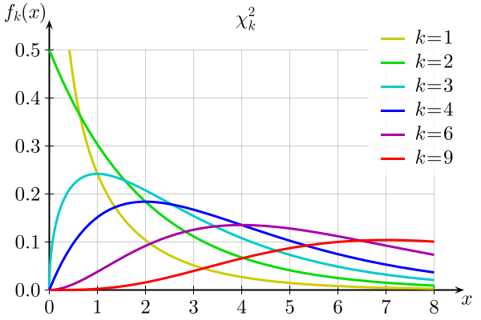{kind=link}
Plot of the chi-square distribution for values of $k = \{ 1,2,3,4,6,9\}$ .
13.2.5. Inferences of Correlation and Regression
The chi-square test of association allows us to evaluate associations (or correlations) between categorical data.
Learning Objective
Calculate the adjusted standardized residuals for a chi-square test
Key Points
- The chi-square test indicates whether there is an association between two categorical variables, but unlike the correlation coefficient between two quantitative variables, it does not in itself give an indication of the strength of the association.
- In order to describe the association more fully, it is necessary to identify the cells that have large differences between the observed and expected frequencies. These differences are referred to as residuals, and they can be standardized and adjusted to follow a Normal distribution.
- The larger the absolute value of the residual, the larger the difference between the observed and expected frequencies, and therefore the more significant the association between the two variables.
Key Terms
- correlation coefficient
- Any of the several measures indicating the strength and direction of a linear relationship between two random variables.
- residuals
- The difference between the observed value and the estimated function value.
The chi-square test of association allows us to evaluate associations (or correlations) between categorical data. It indicates whether there is an association between two categorical variables, but unlike the correlation coefficient between two quantitative variables, it does not in itself give an indication of the strength of the association.
In order to describe the association more fully, it is necessary to identify the cells that have large differences between the observed and expected frequencies. These differences are referred to as residuals, and they can be standardized and adjusted to follow a normal distribution with mean $0$ and standard deviation $1$ . The adjusted standardized residuals, $d_{ij}$ , are given by:
where $n_i$ is the total frequency for row $i$ , $n_j$ is the total frequency for column $j$ , and $N$ is the overall total frequency. The larger the absolute value of the residual, the larger the difference between the observed and expected frequencies, and therefore the more significant the association between the two variables.
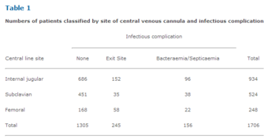{kind=link}
Numbers of patients classified by site of central venous cannula and infectious complication. This table shows the proportions of patients in the sample with cannulae sited at the internal jugular, subclavian and femoral veins. Using the above formula to find the adjusted standardized residual for those with cannulae sited at the internal jugular and no infectious complications yields: $\frac{686-714.5}{\sqrt{714.5\left ( 1-\frac{934}{1706} \right )(1-\frac{1305}{1706})}}=-3.3$ . Subclavian site/no infectious complication has the largest residual at 6.2. Because it is positive, there are more individuals than expected with no infectious complications where the subclavian central line site was used. As these residuals follow a Normal distribution with mean 0 and standard deviation 1, all absolute values over 2 are significant. The association between femoral site/no infectious complication is also significant, but because the residual is negative, there are fewer individuals than expected in this cell. When the subclavian central line site was used, infectious complications appear to be less likely than when the other two sites were used.
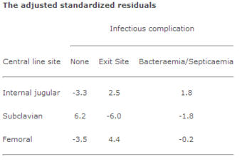{kind=link}
The adjusted standardized residuals from Table 1.
13.2.6. Example: Test for Goodness of Fit
The Chi-square test for goodness of fit compares the expected and observed values to determine how well an experimenter's predictions fit the data.
Learning Objective
Support the use of Pearson's chi-squared test to measure goodness of fit
Key Points
- Pearson's chi-squared test uses a measure of goodness of fit, which is the sum of differences between observed and expected outcome frequencies, each squared and divided by the expectation.
- If the value of the chi-square test statistic is greater than the value in the chi-square table, then the null hypothesis is rejected.
- In this text, we examine a goodness of fit test as follows: for a population of employees, do the days for the highest number of absences occur with equal frequencies during a five day work week?
Key Term
- null hypothesis
- A hypothesis set up to be refuted in order to support an alternative hypothesis; presumed true until statistical evidence in the form of a hypothesis test indicates otherwise.
Pearson's chi-squared test uses a measure of goodness of fit, which is the sum of differences between observed and expected outcome frequencies (that is, counts of observations), each squared and divided by the expectation:
where $O_i$ is an observed frequency (i.e. count) for bin $i$ and $E_i$ = an expected (theoretical) frequency for bin $i$ , asserted by the null hypothesis.
The expected frequency is calculated by:
where $F$ is the cumulative distribution function for the distribution being tested, $Y_u$ is the upper limit for class $i$ , $Y_l$ is the lower limit for class $i$ , and $N$ is the sample size.
Example
Employers want to know which days of the week employees are absent in a five day work week. Most employers would like to believe that employees are absent equally during the week. Suppose a random sample of 60 managers were asked on which day of the week did they have the highest number of employee absences. The results were distributed as follows:
- Monday: 15
- Tuesday: 12
- Wednesday: 9
- Thursday: 9
- Friday: 15
Solution
The null and alternate hypotheses are:
$H_0$ : The absent days occur with equal frequencies—that is, they fit a uniform distribution.
$H_a$ : The absent days occur with unequal frequencies—that is, they do not fit a uniform distribution.
If the absent days occur with equal frequencies then, out of $60$ absent days (the total in the sample: $15 + 12 + 9 + 9 + 15 = 60$ ), there would be $12$ absences on Monday, $12$ on Tuesday, $12$ on Wednesday, $12$ on Thursday, and $12$ on Friday. These numbers are the expected ($E$ ) values. The values in the table are the observed ($O$ ) values or data.
Calculate the $\chi^2$ test statistic. Make a chart with the following column headings and fill in the cells:
- Expected ($E$ ) values ($12$ , $12$ , $12$ , $12$ , $12$ )
- Observed ($O$ ) values ($15$ , $12$ , $9$ , $9$ , $15$ )
- $\left( O-E \right)$
- ${ \left( O-E \right) }^{ 2 }$
- $\dfrac { { \left( O-E \right) }^{ 2 } }{ E }$
Now add (sum) the values of the last column. Verify that this sum is $3$ . This is the $\chi^2$ test statistic.
To find the $p$ -value, calculate $P$ ($\chi^2>3$ ). This test is right-tailed. ($p=0.5578$ )
The degrees of freedom are one fewer than the number of cells: $df = 5-1 = 4$ .
Conclusion
The decision is to not reject the null hypothesis. At a $5\%$ level of significance, from the sample data, there is not sufficient evidence to conclude that the absent days do not occur with equal frequencies.
13.2.7. Example: Test for Independence
The chi-square test for independence is used to determine the relationship between two variables of a sample.
Learning Objective
Explain how to calculate chi-square test for independence
Key Points
- As with the goodness of fit example in the previous section, the key idea of the chi-square test for independence is a comparison of observed and expected values.
- It is important to keep in mind that the chi-square test for independence only tests whether two variables are independent or not, it cannot address questions of which is greater or less.
- In the example presented in this text, we examine whether boys or girls get into trouble more often in school.
- The null hypothesis is that the likelihood of getting in trouble is the same for boys and girls.
- We calculate a chi-square statistic of $1.87$ and find a $p$ -value of $0.20$ . Therefore, we fail to reject the null hypothesis.
Key Terms
- null hypothesis
- A hypothesis set up to be refuted in order to support an alternative hypothesis; presumed true until statistical evidence in the form of a hypothesis test indicates otherwise.
- alternative hypothesis
- a rival hypothesis to the null hypothesis, whose likelihoods are compared by a statistical hypothesis test
The chi-square test for independence is used to determine the relationship between two variables of a sample. In this context, independence means that the two factors are not related. Typically in social science research, researchers are interested in finding factors which are related (e.g., education and income, occupation and prestige, age and voting behavior).
Suppose we want to know whether boys or girls get into trouble more often in school. Below is the table documenting the frequency of boys and girls who got into trouble in school.
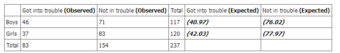{kind=link}
For our example, this table shows the tabulated results of the observed and expected frequencies.
To examine statistically whether boys got in trouble more often in school, we need to establish hypotheses for the question. The null hypothesis is that the two variables are independent. In this particular case, it is that the likelihood of getting in trouble is the same for boys and girls. The alternative hypothesis to be tested is that the likelihood of getting in trouble is not the same for boys and girls.
It is important to keep in mind that the chi-square test for independence only tests whether two variables are independent or not. It cannot address questions of which is greater or less. Using the chi-square test for independence, who gets into more trouble between boys and girls cannot be evaluated directly from the hypothesis.
As with the goodness of fit example seen previously, the key idea of the chi-square test for independence is a comparison of observed and expected values. In the case of tabular data, however, we usually do not know what the distribution should look like (as we did with tossing the coin). Rather, expected values are calculated based on the row and column totals from the table using the following equation:
expected value = (row total x column total) / total for table.
where $\sigma_r$ is the sum over that row, $\sigma_c$ is the sum over that column, and $\sigma_t$ is the sum over the entire table. The expected values (in parentheses, italics and bold) for each cell are also presented in the table above.
With the values in the table, the chi-square statistic can be calculated as follows:
In the chi-square test for independence, the degrees of freedom are found as follows:
where $r$ is the number of rows in the table and $c$ is the number of columns in the table. Substituting in the proper values yields:
Finally, the value calculated from the formula above is compared with values in the chi-square distribution table. The value returned from the table is $p<0.2$ ($20\%$ ). Therefore, the null hypothesis is not rejected. Hence, boys are not significantly more likely to get in trouble in school than girls.
13.3. Tests for Ranked Data
13.3.1. When to Use These Tests
"Ranking" refers to the data transformation in which numerical or ordinal values are replaced by their rank when the data are sorted.
Learning Objective
Indicate why and how data transformation is performed and how this relates to ranked data.
Key Points
- Data transforms are usually applied so that the data appear to more closely meet the assumptions of a statistical inference procedure that is to be applied, or to improve the interpretability or appearance of graphs.
- Guidance for how data should be transformed, or whether a transform should be applied at all, should come from the particular statistical analysis to be performed.
- When there is evidence of substantial skew in the data, it is common to transform the data to a symmetric distribution before constructing a confidence interval.
- Data can also be transformed to make it easier to visualize them.
- A final reason that data can be transformed is to improve interpretability, even if no formal statistical analysis or visualization is to be performed.
Key Terms
- central limit theorem
- The theorem that states: If the sum of independent identically distributed random variables has a finite variance, then it will be (approximately) normally distributed.
- confidence interval
- A type of interval estimate of a population parameter used to indicate the reliability of an estimate.
- data transformation
- The application of a deterministic mathematical function to each point in a data set.
In statistics, "ranking" refers to the data transformation in which numerical or ordinal values are replaced by their rank when the data are sorted. If, for example, the numerical data 3.4, 5.1, 2.6, 7.3 are observed, the ranks of these data items would be 2, 3, 1 and 4 respectively. In another example, the ordinal data hot, cold, warm would be replaced by 3, 1, 2. In these examples, the ranks are assigned to values in ascending order. (In some other cases, descending ranks are used. ) Ranks are related to the indexed list of order statistics, which consists of the original dataset rearranged into ascending order.
Some kinds of statistical tests employ calculations based on ranks. Examples include:
- Friedman test
- Kruskal-Wallis test
- Rank products
- Spearman's rank correlation coefficient
- Wilcoxon rank-sum test
- Wilcoxon signed-rank test
Some ranks can have non-integer values for tied data values. For example, when there is an even number of copies of the same data value, the above described fractional statistical rank of the tied data ends in $\frac{1}{2}$ .
Data Transformation
Data transformation refers to the application of a deterministic mathematical function to each point in a data set—that is, each data point $z_i$ is replaced with the transformed value $y_i = f(z_i)$ , where $f$ is a function. Transforms are usually applied so that the data appear to more closely meet the assumptions of a statistical inference procedure that is to be applied, or to improve the interpretability or appearance of graphs.
Nearly always, the function that is used to transform the data is invertible and, generally, is continuous. The transformation is usually applied to a collection of comparable measurements. For example, if we are working with data on peoples' incomes in some currency unit, it would be common to transform each person's income value by the logarithm function.
Reasons for Transforming Data
Guidance for how data should be transformed, or whether a transform should be applied at all, should come from the particular statistical analysis to be performed. For example, a simple way to construct an approximate 95% confidence interval for the population mean is to take the sample mean plus or minus two standard error units. However, the constant factor 2 used here is particular to the normal distribution and is only applicable if the sample mean varies approximately normally. The central limit theorem states that in many situations, the sample mean does vary normally if the sample size is reasonably large.
However, if the population is substantially skewed and the sample size is at most moderate, the approximation provided by the central limit theorem can be poor, and the resulting confidence interval will likely have the wrong coverage probability. Thus, when there is evidence of substantial skew in the data, it is common to transform the data to a symmetric distribution before constructing a confidence interval. If desired, the confidence interval can then be transformed back to the original scale using the inverse of the transformation that was applied to the data.
Data can also be transformed to make it easier to visualize them. For example, suppose we have a scatterplot in which the points are the countries of the world, and the data values being plotted are the land area and population of each country. If the plot is made using untransformed data (e.g., square kilometers for area and the number of people for population), most of the countries would be plotted in tight cluster of points in the lower left corner of the graph. The few countries with very large areas and/or populations would be spread thinly around most of the graph's area. Simply rescaling units (e.g., to thousand square kilometers, or to millions of people) will not change this. However, following logarithmic transformations of both area and population, the points will be spread more uniformly in the graph .
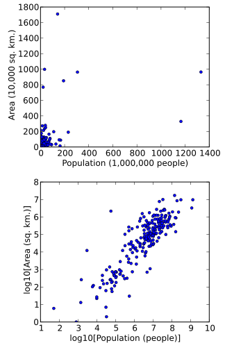{kind=link}
A scatterplot in which the areas of the sovereign states and dependent territories in the world are plotted on the vertical axis against their populations on the horizontal axis. The upper plot uses raw data. In the lower plot, both the area and population data have been transformed using the logarithm function.
A final reason that data can be transformed is to improve interpretability, even if no formal statistical analysis or visualization is to be performed. For example, suppose we are comparing cars in terms of their fuel economy. These data are usually presented as "kilometers per liter" or "miles per gallon. " However, if the goal is to assess how much additional fuel a person would use in one year when driving one car compared to another, it is more natural to work with the data transformed by the reciprocal function, yielding liters per kilometer, or gallons per mile.
13.3.2. Mann-Whitney U-Test
The Mann–Whitney $U$ -test is a non-parametric test of the null hypothesis that two populations are the same against an alternative hypothesis.
Learning Objective
Compare the Mann-Whitney
Key Points
- Mann-Whitney has greater efficiency than the $t$ -test on non-normal distributions, such as a mixture of normal distributions, and it is nearly as efficient as the $t$ -test on normal distributions.
- The test involves the calculation of a statistic, usually called $U$ , whose distribution under the null hypothesis is known.
- The first method to calculate $U$ involves choosing the sample which has the smaller ranks, then counting the number of ranks in the other sample that are smaller than the ranks in the first, then summing these counts.
- The second method involves adding up the ranks for the observations which came from sample 1. The sum of ranks in sample 2 is now determinate, since the sum of all the ranks equals $\frac{N(N+1)}{2}$ , where $N$ is the total number of observations.
Key Terms
- ordinal data
- A statistical data type consisting of numerical scores that exist on an ordinal scale, i.e. an arbitrary numerical scale where the exact numerical quantity of a particular value has no significance beyond its ability to establish a ranking over a set of data points.
- tie
- One or more equal values or sets of equal values in the data set.
The Mann–Whitney $U$ -test is a non-parametric test of the null hypothesis that two populations are the same against an alternative hypothesis, especially that a particular population tends to have larger values than the other. It has greater efficiency than the $t$ -test on non-normal distributions, such as a mixture of normal distributions, and it is nearly as efficient as the $t$ -test on normal distributions.
Assumptions and Formal Statement of Hypotheses
Although Mann and Whitney developed the test under the assumption of continuous responses with the alternative hypothesis being that one distribution is stochastically greater than the other, there are many other ways to formulate the null and alternative hypotheses such that the test will give a valid test. A very general formulation is to assume that:
- All the observations from both groups are independent of each other.
- The responses are ordinal (i.e., one can at least say of any two observations which is the greater).
- The distributions of both groups are equal under the null hypothesis, so that the probability of an observation from one population ($X$ ) exceeding an observation from the second population ($Y$ ) equals the probability of an observation from $Y$ exceeding an observation from $X$ . That is, there is a symmetry between populations with respect to probability of random drawing of a larger observation.
- Under the alternative hypothesis, the probability of an observation from one population ($X$ ) exceeding an observation from the second population ($Y$ ) (after exclusion of ties) is not equal to $0.5$ . The alternative may also be stated in terms of a one-sided test, for example: $P(X > Y) + 0.5 \cdot P(X = Y) > 0.5$ .
Calculations
The test involves the calculation of a statistic, usually called $U$ , whose distribution under the null hypothesis is known. In the case of small samples, the distribution is tabulated, but for sample sizes above about 20, approximation using the normal distribution is fairly good.
There are two ways of calculating $U$ by hand. For either method, we must first arrange all the observations into a single ranked series. That is, rank all the observations without regard to which sample they are in.
Method One
For small samples a direct method is recommended. It is very quick, and gives an insight into the meaning of the $U$ statistic.
- Choose the sample for which the ranks seem to be smaller (the only reason to do this is to make computation easier). Call this "sample 1," and call the other sample "sample 2. "
- For each observation in sample 1, count the number of observations in sample 2 that have a smaller rank (count a half for any that are equal to it). The sum of these counts is $U$ .
Method Two
For larger samples, a formula can be used.
First, add up the ranks for the observations that came from sample 1. The sum of ranks in sample 2 is now determinate, since the sum of all the ranks equals:
where $N$ is the total number of observations. $U$ is then given by:
where $n_1$ is the sample size for sample 1, and $R_1$ is the sum of the ranks in sample 1. Note that it doesn't matter which of the two samples is considered sample 1. The smaller value of $U_1$ and $U_2$ is the one used when consulting significance tables.
Example of Statement Results
In reporting the results of a Mann–Whitney test, it is important to state:
- a measure of the central tendencies of the two groups (means or medians; since the Mann–Whitney is an ordinal test, medians are usually recommended)
- the value of $U$
- the sample sizes
- the significance level
In practice some of this information may already have been supplied and common sense should be used in deciding whether to repeat it. A typical report might run:
"Median latencies in groups $E$ and $C$ were $153$ and $247$ ms; the distributions in the two groups differed significantly (Mann–Whitney $U=10.5$ , $n_1=n_2=8$ , $P < 0.05\text{, two-tailed}$ )."
Comparison to Student's $t$ -Test
The $U$ -test is more widely applicable than independent samples Student's $t$ -test, and the question arises of which should be preferred.
Ordinal Data
$U$ remains the logical choice when the data are ordinal but not interval scaled, so that the spacing between adjacent values cannot be assumed to be constant.
Robustness
As it compares the sums of ranks, the Mann–Whitney test is less likely than the $t$ -test to spuriously indicate significance because of the presence of outliers (i.e., Mann–Whitney is more robust).
Efficiency
For distributions sufficiently far from normal and for sufficiently large sample sizes, the Mann-Whitney Test is considerably more efficient than the $t$ . Overall, the robustness makes Mann-Whitney more widely applicable than the $t$ -test. For large samples from the normal distribution, the efficiency loss compared to the $t$ -test is only 5%, so one can recommend Mann-Whitney as the default test for comparing interval or ordinal measurements with similar distributions.
13.3.3. Wilcoxon t-Test
The Wilcoxon $t$ -test assesses whether population mean ranks differ for two related samples, matched samples, or repeated measurements on a single sample.
Learning Objective
Break down the procedure for the Wilcoxon signed-rank t-test.
Key Points
- The Wilcoxon $t$ -test can be used as an alternative to the paired Student's $t$ -test, $t$ -test for matched pairs, or the $t$ -test for dependent samples when the population cannot be assumed to be normally distributed.
- The test is named for Frank Wilcoxon who (in a single paper) proposed both the rank $t$ -test and the rank-sum test for two independent samples.
- The test assumes that data are paired and come from the same population, each pair is chosen randomly and independent and the data are measured at least on an ordinal scale, but need not be normal.
Key Terms
- Wilcoxon t-test
- A non-parametric statistical hypothesis test used when comparing two related samples, matched samples, or repeated measurements on a single sample to assess whether their population mean ranks differ (i.e., it is a paired-difference test).
- tie
- One or more equal values or sets of equal values in the data set.
The Wilcoxon signed-rank t-test is a non-parametric statistical hypothesis test used when comparing two related samples, matched samples, or repeated measurements on a single sample to assess whether their population mean ranks differ (i.e., it is a paired difference test). It can be used as an alternative to the paired Student's $t$ -test, $t$ -test for matched pairs, or the $t$ -test for dependent samples when the population cannot be assumed to be normally distributed.
The test is named for Frank Wilcoxon who (in a single paper) proposed both the rank $t$ -test and the rank-sum test for two independent samples. The test was popularized by Siegel in his influential text book on non-parametric statistics. Siegel used the symbol $T$ for the value defined below as $W$ . In consequence, the test is sometimes referred to as the Wilcoxon $T$ -test, and the test statistic is reported as a value of $T$ . Other names may include the "$t$ -test for matched pairs" or the "$t$ -test for dependent samples."
Assumptions
- Data are paired and come from the same population.
- Each pair is chosen randomly and independent.
- The data are measured at least on an ordinal scale, but need not be normal.
Test Procedure
Let $N$ be the sample size, the number of pairs. Thus, there are a total of $2N$ data points. For $i=1,\cdots,N$ , let $x_{1,i}$ and $x_{2,i}$ denote the measurements.
$H_0$ : The median difference between the pairs is zero.
$H_1$ : The median difference is not zero.
1. For $i=1,\cdots,N$ , calculate $\left| { x }_{ 2,i }-{ x }_{ 1,i } \right|$ and $\text{sgn}\left( { x }_{ 2,i }-{ x }_{ 1,i } \right)$ , where $\text{sgn}$ is the sign function.
2. Exclude pairs with $\left|{ x }_{ 2,i }-{ x }_{ 1,i } \right|=0$ . Let $N_r$ be the reduced sample size.
3. Order the remaining pairs from smallest absolute difference to largest absolute difference, $\left| { x }_{ 2,i }-{ x }_{ 1,i } \right|$ .
4. Rank the pairs, starting with the smallest as 1. Ties receive a rank equal to the average of the ranks they span. Let $R_i$ denote the rank.
5. Calculate the test statistic $W$ , the absolute value of the sum of the signed ranks:
6. As $N_r$ increases, the sampling distribution of $W$ converges to a normal distribution. Thus, for $N_r \geq 10$ , a $z$ -score can be calculated as follows:
where
If $z > z_{\text{critical}}$ then reject $H_0$ .
For $N_r < 10$ , $W$ is compared to a critical value from a reference table. If $W\ge { W }_{ \text{critical,}{ N }_{ r } }$ then reject $H_0$ .
Alternatively, a $p$ -value can be calculated from enumeration of all possible combinations of $W$ given $N_r$ .
13.3.4. Kruskal-Wallis H-Test
The Kruskal–Wallis one-way analysis of variance by ranks is a non-parametric method for testing whether samples originate from the same distribution.
Learning Objective
Summarize the Kruskal-Wallis one-way analysis of variance and outline its methodology
Key Points
- The Kruskal-Wallis test is used for comparing more than two samples that are independent, or not related.
- When the Kruskal-Wallis test leads to significant results, then at least one of the samples is different from the other samples.
- The test does not identify where the differences occur or how many differences actually occur.
- Since it is a non-parametric method, the Kruskal–Wallis test does not assume a normal distribution, unlike the analogous one-way analysis of variance.
- The test does assume an identically shaped and scaled distribution for each group, except for any difference in medians.
- Kruskal–Wallis is also used when the examined groups are of unequal size (different number of participants).
Key Terms
- Kruskal-Wallis test
- A non-parametric method for testing whether samples originate from the same distribution.
- Type I error
- An error occurring when the null hypothesis (
$H_0$ ) is true, but is rejected. - chi-squared distribution
- A distribution with
$k$ degrees of freedom is the distribution of a sum of the squares of$k$ independent standard normal random variables.
The Kruskal–Wallis one-way analysis of variance by ranks (named after William Kruskal and W. Allen Wallis) is a non-parametric method for testing whether samples originate from the same distribution. It is used for comparing more than two samples that are independent, or not related. The parametric equivalent of the Kruskal-Wallis test is the one-way analysis of variance (ANOVA). When the Kruskal-Wallis test leads to significant results, then at least one of the samples is different from the other samples. The test does not identify where the differences occur, nor how many differences actually occur. It is an extension of the Mann–Whitney $U$ test to 3 or more groups. The Mann-Whitney would help analyze the specific sample pairs for significant differences.
Since it is a non-parametric method, the Kruskal–Wallis test does not assume a normal distribution, unlike the analogous one-way analysis of variance. However, the test does assume an identically shaped and scaled distribution for each group, except for any difference in medians.
Kruskal–Wallis is also used when the examined groups are of unequal size (different number of participants).
Method
1. Rank all data from all groups together; i.e., rank the data from $1$ to $N$ ignoring group membership. Assign any tied values the average of the ranks would have received had they not been tied.
2. The test statistic is given by:
$\displaystyle{K=(N-1) \frac{\displaystyle{\sum_{i=1}^gn_i(\bar{r}_{i\cdot} - \bar{r})^2}}{\displaystyle{\sum_{i=1}^g \sum_{j=1}^{n_i} (r_{ij}-\bar{r})^2}}}$ where
and where $\bar{r} = \frac{1}{2} (N+1)$ and is the average of all values of $r_{ij}$ , $n_i$ is the number of observations in group $i$ , $r_{ij}$ is the rank (among all observations) of observation $j$ from group $i$ , and $N$ is the total number of observations across all groups.
3. If the data contain no ties, the denominator of the expression for $K$ is exactly
and
Therefore:
Note that the second line contains only the squares of the average ranks.
4. A correction for ties if using the shortcut formula described in the previous point can be made by dividing $K$ by the following:
where $G$ is the number of groupings of different tied ranks, and $t_i$ is the number of tied values within group $i$ that are tied at a particular value. This correction usually makes little difference in the value of $K$ unless there are a large number of ties.
5. Finally, the p-value is approximated by:
If some $n_i$ values are small (i.e., less than 5) the probability distribution of $K$ can be quite different from this chi-squared distribution. If a table of the chi-squared probability distribution is available, the critical value of chi-squared, ${ \chi }_{ \alpha ,g-1' }^{ 2 }$ , can be found by entering the table at $g - 1$ degrees of freedom and looking under the desired significance or alpha level. The null hypothesis of equal population medians would then be rejected if $K\ge { \chi }_{ \alpha ,g-1 }^{ 2 }$ . Appropriate multiple comparisons would then be performed on the group medians.
6. If the statistic is not significant, then there is no evidence of differences between the samples. However, if the test is significant then a difference exists between at least two of the samples. Therefore, a researcher might use sample contrasts between individual sample pairs, or post hoc tests, to determine which of the sample pairs are significantly different. When performing multiple sample contrasts, the type I error rate tends to become inflated.
13.4. Nonparametric Statistics
13.4.1. Distribution-Free Tests
Distribution-free tests are hypothesis tests that make no assumptions about the probability distributions of the variables being assessed.
Learning Objective
Distinguish distribution-free tests for testing statistical hypotheses
Key Points
- The first meaning of non-parametric covers techniques that do not rely on data belonging to any particular distribution.
- The second meaning of non-parametric covers techniques that do not assume that the structure of a model is fixed.
- Non-parametric methods are widely used for studying populations that take on a ranked order (such as movie reviews receiving one to four stars).
Key Terms
- parametric
- of, relating to, or defined using parameters
- ordinal
- Of a number, indicating position in a sequence.
Non-Parametric Statistics
The term "non-parametric statistics" has, at least, two different meanings.
1. The first meaning of non-parametric covers techniques that do not rely on data belonging to any particular distribution. These include, among others:
- distribution free methods, which do not rely on assumptions that the data are drawn from a given probability distribution. ( As such, it is the opposite of parametric statistics. It includes non-parametric descriptive statistics, statistical models, inference, and statistical tests).
- non-parametric statistics (in the sense of a statistic over data, which is defined to be a function on a sample that has no dependency on a parameter), whose interpretation does not depend on the population fitting any parameterized distributions. Order statistics, which are based on the ranks of observations, are one example of such statistics. These play a central role in many non-parametric approaches.
2. The second meaning of non-parametric covers techniques that do not assume that the structure of a model is fixed. Typically, the model grows in size to accommodate the complexity of the data. In these techniques, individual variables are typically assumed to belong to parametric distributions. Assumptions are also made about the types of connections among variables.
Non-parametric methods are widely used for studying populations that take on a ranked order (such as movie reviews receiving one to four stars). The use of non-parametric methods may be necessary when data have a ranking but no clear numerical interpretation, such as assessing preferences. In terms of levels of measurement, non-parametric methods result in "ordinal" data.
Distribution-Free Tests
Distribution-free statistical methods are mathematical procedures for testing statistical hypotheses which, unlike parametric statistics, make no assumptions about the probability distributions of the variables being assessed. The most frequently used tests include the following:
Anderson–Darling test: tests whether a sample is drawn from a given distribution.
Statistical Bootstrap Methods: estimates the accuracy/sampling distribution of a statistic.
Cochran's $Q$ : tests whether $k$ treatments in randomized block designs with $0/1$ outcomes have identical effects.
Cohen's kappa: measures inter-rater agreement for categorical items.
Friedman two-way analysis of variance by ranks: tests whether $k$ treatments in randomized block designs have identical effects.
Kaplan–Meier: estimates the survival function from lifetime data, modeling censoring.
Kendall's tau: measures statistical dependence between two variables.
Kendall's W: a measure between $0$ and $1$ of inter-rater agreement.
Kolmogorov–Smirnov test: tests whether a sample is drawn from a given distribution, or whether two samples are drawn from the same distribution.
Kruskal-Wallis one-way analysis of variance by ranks: tests whether more than 2 independent samples are drawn from the same distribution.
Kuiper's test: tests whether a sample is drawn from a given distribution that is sensitive to cyclic variations such as day of the week.
Logrank Test: compares survival distributions of two right-skewed, censored samples.
Mann–Whitney $U$ or Wilcoxon rank sum test: tests whether two samples are drawn from the same distribution, as compared to a given alternative hypothesis.
McNemar's test: tests whether, in $2 \times 2$ contingency tables with a dichotomous trait and matched pairs of subjects, row and column marginal frequencies are equal.
Median test: tests whether two samples are drawn from distributions with equal medians.
Pitman's permutation test: a statistical significance test that yields exact $p$ values by examining all possible rearrangements of labels.
Rank products: differentially detects expressed genes in replicated microarray experiments.
Siegel–Tukey test: tests for differences in scale between two groups.
Sign test: tests whether matched pair samples are drawn from distributions with equal medians.
Spearman's rank correlation coefficient: measures statistical dependence between two variables using a monotonic function.
Squared ranks test: tests equality of variances in two or more samples.
Wald–Wolfowitz runs test: tests whether the elements of a sequence are mutually independent/random.
Wilcoxon signed-rank test: tests whether matched pair samples are drawn from populations with different mean ranks.
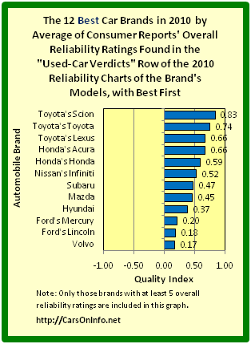{kind=link}
This image shows a graphical representation of a ranked list of the highest rated cars in 2010. Non-parametric statistics is widely used for studying populations that take on a ranked order.
13.4.2. Sign Test
The sign test can be used to test the hypothesis that there is "no difference in medians" between the continuous distributions of two random variables.
Learning Objective
Discover the nonparametric statistical sign test and outline its method.
Key Points
- Non-parametric statistical tests tend to be more general, and easier to explain and apply, due to the lack of assumptions about the distribution of the population or population parameters.
- In order to perform the sign test, we must be able to draw paired samples from the distributions of two random variables, $X$ and $Y$ .
- The sign test has very general applicability but may lack the statistical power of other tests.
- When performing a sign test, we count the number of values in the sample that are above the median and denote them by the sign $+$ and the ones falling below the median by the symbol $-$ .
Key Term
- sign test
- a statistical test concerning the median of a continuous population with the idea that the probability of getting a value below the median or a value above the median is
$\frac{1}{2}$
Non-parametric statistical tests tend to be more general, and easier to explain and apply, due to the lack of assumptions about the distribution of the population or population parameters. One such statistical method is known as the sign test.
The sign test can be used to test the hypothesis that there is "no difference in medians" between the continuous distributions of two random variables $X$ and $Y$ , in the situation when we can draw paired samples from $X$ and $Y$ . As outlined above, the sign test is a non-parametric test which makes very few assumptions about the nature of the distributions under examination. Because of this fact, it has very general applicability but may lack the statistical power of other tests.
The One-Sample Sign Test
This test concerns the median $\tilde { \mu }$ of a continuous population. The idea is that the probability of getting a value below the median or a value above the median is $\frac{1}{2}$ . We test the null hypothesis:
against an appropriate alternative hypothesis:
We count the number of values in the sample that are above ${ \tilde { \mu } }_{ 0 }$ and represent them with the $+$ sign and the ones falling below ${ \tilde { \mu } }_{ 0 }$ with the $-$ .
For example, suppose that in a sample of students from a class the ages of the students are:
Test the claim that the median is less than $24$ years of age with a significance level of $\alpha = 0.05$ . The hypothesis is then written as:
The test statistic $x$ is then the number of plus signs. In this case we get:
Therefore, $x=5$ .
The variable $X$ follows a binomial distribution with $n=12$ (number of values) and $p=\frac{1}{2}$ . Therefore:
Since the $p$ -value of $0.3872$ is larger than the significance level $\alpha = 0.05$ , the null-hypothesis cannot be rejected. Therefore, we conclude that the median age of the population is not less than $24$ years of age. Actually in this particular class, the median age was $24$ , so we arrive at the correct conclusion.
{kind=link}
The sign test involves denoting values above the median of a continuous population with a plus sign and the ones falling below the median with a minus sign in order to test the hypothesis that there is no difference in medians.
13.4.3. Single-Population Inferences
Two notable nonparametric methods of making inferences about single populations are bootstrapping and the Anderson–Darling test.
Learning Objective
Contrast bootstrapping and the Anderson–Darling test for making inferences about single populations
Key Points
- Bootstrapping is a method for assigning measures of accuracy to sample estimates.
- More specifically, bootstrapping is the practice of estimating properties of an estimator (such as its variance) by measuring those properties when sampling from an approximating distribution.
- The bootstrap works by treating inference of the true probability distribution $J$ , given the original data, as being analogous to inference of the empirical distribution of $\hat{J}$ , given the resampled data.
- The Anderson–Darling test is a statistical test of whether a given sample of data is drawn from a given probability distribution.
- In its basic form, the test assumes that there are no parameters to be estimated in the distribution being tested, in which case the test and its set of critical values is distribution-free.
- $K$ -sample Anderson–Darling tests are available for testing whether several collections of observations can be modeled as coming from a single population.
Key Terms
- bootstrap
- any method or instance of estimating properties of an estimator (such as its variance) by measuring those properties when sampling from an approximating distribution
- uniform distribution
- a family of symmetric probability distributions such that, for each member of the family, all intervals of the same length on the distribution's support are equally probable
Two notable nonparametric methods of making inferences about single populations are bootstrapping and the Anderson–Darling test.
Bootstrapping
Bootstrapping is a method for assigning measures of accuracy to sample estimates. This technique allows estimation of the sampling distribution of almost any statistic using only very simple methods.
More specifically, bootstrapping is the practice of estimating properties of an estimator (such as its variance) by measuring those properties when sampling from an approximating distribution. One standard choice for an approximating distribution is the empirical distribution of the observed data. In the case where a set of observations can be assumed to be from an independent and identically distributed population, this can be implemented by constructing a number of resamples of the observed dataset (and of equal size to the observed dataset), each of which is obtained by random sampling with replacement from the original dataset.
Bootstrapping may also be used for constructing hypothesis tests. It is often used as an alternative to inference based on parametric assumptions when those assumptions are in doubt, or where parametric inference is impossible or requires very complicated formulas for the calculation of standard errors.
Approach
The bootstrap works by treating inference of the true probability distribution $J$ , given the original data, as being analogous to inference of the empirical distribution of $\hat{J}$ , given the resampled data. The accuracy of inferences regarding $\hat{J}$ using the resampled data can be assessed because we know $\hat{J}$ . If $\hat{J}$ is a reasonable approximation to $J$ , then the quality of inference on $J$ can, in turn, be inferred.
As an example, assume we are interested in the average (or mean) height of people worldwide. We cannot measure all the people in the global population, so instead we sample only a tiny part of it, and measure that. Assume the sample is of size $N$ ; that is, we measure the heights of $N$ individuals. From that single sample, only one value of the mean can be obtained. In order to reason about the population, we need some sense of the variability of the mean that we have computed.
The simplest bootstrap method involves taking the original data set of $N$ heights, and, using a computer, sampling from it to form a new sample (called a 'resample' or bootstrap sample) that is also of size $N$ . The bootstrap sample is taken from the original using sampling with replacement so it is not identical with the original "real" sample. This process is repeated a large number of times, and for each of these bootstrap samples we compute its mean. We now have a histogram of bootstrap means. This provides an estimate of the shape of the distribution of the mean, from which we can answer questions about how much the mean varies.
Situations where bootstrapping is useful include:
- When the theoretical distribution of a statistic of interest is complicated or unknown.
- When the sample size is insufficient for straightforward statistical inference.
- When power calculations have to be performed, and a small pilot sample is available.
A great advantage of bootstrap is its simplicity. It is a straightforward way to derive estimates of standard errors and confidence intervals for complex estimators of complex parameters of the distribution, such as percentile points, proportions, odds ratio, and correlation coefficients. Moreover, it is an appropriate way to control and check the stability of the results.
However, although bootstrapping is (under some conditions) asymptotically consistent, it does not provide general finite-sample guarantees. The apparent simplicity may conceal the fact that important assumptions are being made when undertaking the bootstrap analysis (e.g. independence of samples) where these would be more formally stated in other approaches.
The Anderson–Darling Test
The Anderson–Darling test is a statistical test of whether a given sample of data is drawn from a given probability distribution. In its basic form, the test assumes that there are no parameters to be estimated in the distribution being tested, in which case the test and its set of critical values is distribution-free. $K$ -sample Anderson–Darling tests are available for testing whether several collections of observations can be modeled as coming from a single population, where the distribution function does not have to be specified.
The Anderson–Darling test assesses whether a sample comes from a specified distribution. It makes use of the fact that, when given a hypothesized underlying distribution and assuming the data does arise from this distribution, the data can be transformed to a uniform distribution. The transformed sample data can be then tested for uniformity with a distance test. The formula for the test statistic $A$ to assess if data $\{ Y_1 < \dots, n \}$ comes from a distribution with cumulative distribution function (CDF) $F$ is:
where
The test statistic can then be compared against the critical values of the theoretical distribution. Note that in this case no parameters are estimated in relation to the distribution function $F$ .
13.4.4. Comparing Two Populations: Independent Samples
Nonparametric independent samples tests include Spearman's and the Kendall tau rank correlation coefficients, the Kruskal–Wallis ANOVA, and the runs test.
Learning Objective
Contrast Spearman, Kendall, Kruskal–Wallis, and Walk–Wolfowitz methods for examining the independence of samples
Key Points
- Spearman's rank correlation coefficient assesses how well the relationship between two variables can be described using a monotonic function.
- Kendall's tau ($\tau$ ) coefficient is a statistic used to measure the association between two measured quantities.
- The Kruskal–Wallis one-way ANOVA by ranks is a nonparametric method for testing whether samples originate from the same distribution.
- The Walk–Wolfowitz runs test is a non-parametric statistical test for the hypothesis that the elements of a sequence are mutually independent.
Key Term
- monotonic function
- a function that either never decreases or never increases as its independent variable increases
Nonparametric methods for testing the independence of samples include Spearman's rank correlation coefficient, the Kendall tau rank correlation coefficient, the Kruskal–Wallis one-way analysis of variance, and the Walk–Wolfowitz runs test.
Spearman's Rank Correlation Coefficient
Spearman's rank correlation coefficient, often denoted by the Greek letter $\rho$ (rho), is a nonparametric measure of statistical dependence between two variables. It assesses how well the relationship between two variables can be described using a monotonic function. If there are no repeated data values, a perfect Spearman correlation of $1$ or $-1$ occurs when each of the variables is a perfect monotone function of the other.
For a sample of size $n$ , the $n$ raw scores $X_i$ , $Y_i$ are converted to ranks $x_i$ , $y_i$ , and $\rho$ is computed from these:
The sign of the Spearman correlation indicates the direction of association between $X$ (the independent variable) and $Y$ (the dependent variable). If $Y$ tends to increase when $X$ increases, the Spearman correlation coefficient is positive. If $Y$ tends to decrease when $X$ increases, the Spearman correlation coefficient is negative. A Spearman correlation of zero indicates that there is no tendency for $Y$ to either increase or decrease when $X$ increases.
The Kendall Tau Rank Correlation Coefficient
Kendall's tau ($\tau$ ) coefficient is a statistic used to measure the association between two measured quantities. A tau test is a non-parametric hypothesis test for statistical dependence based on the tau coefficient.
Let $(x_1, y_1), (x_2, y_2), \cdots, (x_n, y_n)$ be a set of observations of the joint random variables $X$ and $Y$ respectively, such that all the values of ($x_i$ ) and ($y_i$ ) are unique. Any pair of observations are said to be concordant if the ranks for both elements agree. The Kendall $\tau$ coefficient is defined as:
The denominator is the total number pair combinations, so the coefficient must be in the range $-1 \leq \tau \leq 1$ . If the agreement between the two rankings is perfect (i.e., the two rankings are the same) the coefficient has value $1$ . If the disagreement between the two rankings is perfect (i.e., one ranking is the reverse of the other) the coefficient has value $-1$ . If $X$ and $Y$ are independent, then we would expect the coefficient to be approximately zero.
The Kruskal–Wallis One-Way Analysis of Variance
The Kruskal–Wallis one-way ANOVA by ranks is a nonparametric method for testing whether samples originate from the same distribution. It is used for comparing more than two samples that are independent, or not related. When the Kruskal–Wallis test leads to significant results, then at least one of the samples is different from the other samples. The test does not identify where the differences occur or how many differences actually occur.
Since it is a non-parametric method, the Kruskal–Wallis test does not assume a normal distribution, unlike the analogous one-way analysis of variance. However, the test does assume an identically shaped and scaled distribution for each group, except for any difference in medians.
The Walk–Wolfowitz Runs Test
The Walk–Wolfowitz runs test is a non-parametric statistical test that checks a randomness hypothesis for a two-valued data sequence. More precisely, it can be used to test the hypothesis that the elements of the sequence are mutually independent.
A "run" of a sequence is a maximal non-empty segment of the sequence consisting of adjacent equal elements. For example, the 22-element-long sequence
consists of 6 runs, 3 of which consist of $+$ and the others of $-$ . The run test is based on the null hypothesis that the two elements $+$ and $-$ are independently drawn from the same distribution.
The mean and variance parameters of the run do not assume that the positive and negative elements have equal probabilities of occurring, but only assume that the elements are independent and identically distributed. If the number of runs is significantly higher or lower than expected, the hypothesis of statistical independence of the elements may be rejected.
13.4.5. Comparing Two Populations: Paired Difference Experiment
McNemar's test is applied to $2 \times 2$ contingency tables with matched pairs of subjects to determine whether the row and column marginal frequencies are equal.
Learning Objective
Model the normal approximation of nominal data using McNemar's test
Key Points
- A contingency table used in McNemar's test tabulates the outcomes of two tests on a sample of $n$ subjects.
- The null hypothesis of marginal homogeneity states that the two marginal probabilities for each outcome are the same.
- The McNemar test statistic is: ${ \chi }^{ 2 }=\frac { { \left( b-c \right) }^{ 2 } }{ b+c }$ .
- If the ${ \chi }^{ 2 }$ result is significant, this provides sufficient evidence to reject the null hypothesis in favor of the alternative hypothesis that $p_b \neq p_c$ , which would mean that the marginal proportions are significantly different from each other.
Key Terms
- binomial distribution
- the discrete probability distribution of the number of successes in a sequence of n independent yes/no experiments, each of which yields success with probability
$p$ - chi-squared distribution
- A distribution with
$k$ degrees of freedom is the distribution of a sum of the squares of$k$ independent standard normal random variables.
McNemar's test is a normal approximation used on nominal data. It is applied to $2 \times 2$ contingency tables with a dichotomous trait, with matched pairs of subjects, to determine whether the row and column marginal frequencies are equal ("marginal homogeneity").
A contingency table used in McNemar's test tabulates the outcomes of two tests on a sample of $n$ subjects, as follows:
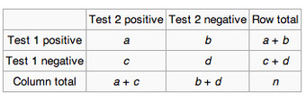{kind=link}
A contingency table used in McNemar's test tabulates the outcomes of two tests on a sample of $n$ subjects.
The null hypothesis of marginal homogeneity states that the two marginal probabilities for each outcome are the same, i.e. $p_a + p_b = p_a + p_c$ and $p_c + p_d = p_b + p_d$ . Thus, the null and alternative hypotheses are:
Here $p_a$ , etc., denote the theoretical probability of occurrences in cells with the corresponding label. The McNemar test statistic is:
Under the null hypothesis, with a sufficiently large number of discordants, ${ \chi }^{ 2 }$ has a chi-squared distribution with $1$ degree of freedom. If either $b$ or $c$ is small ($b+c<25$ ) then ${ \chi }^{ 2 }$ is not well-approximated by the chi-squared distribution. The binomial distribution can be used to obtain the exact distribution for an equivalent to the uncorrected form of McNemar's test statistic. In this formulation, $b$ is compared to a binomial distribution with size parameter equal to $b+c$ and "probability of success" of $\frac{1}{2}$ , which is essentially the same as the binomial sign test. For $b+c<25$ , the binomial calculation should be performed. Indeed, most software packages simply perform the binomial calculation in all cases, since the result then is an exact test in all cases. When comparing the resulting ${ \chi }^{ 2 }$ statistic to the right tail of the chi-squared distribution, the $p$ -value that is found is two-sided, whereas to achieve a two-sided $p$ -value in the case of the exact binomial test, the $p$ -value of the extreme tail should be multiplied by $2$ .
If the ${ \chi }^{ 2 }$ result is significant, this provides sufficient evidence to reject the null hypothesis in favor of the alternative hypothesis that $p_b \neq p_c$ , which would mean that the marginal proportions are significantly different from each other.
13.4.6. Comparing Three or More Populations: Randomized Block Design
Nonparametric methods using randomized block design include Cochran's $Q$ test and Friedman's test.
Learning Objective
Use the Friedman test to detect differences in treatments across multiple test attempts; use the Cochran's Q test to verify if k treatments have identical effects
Key Points
- In the analysis of two-way randomized block designs, where the response variable can take only two possible outcomes (coded as $0$ and $1$ ), Cochran's $Q$ test is a non-parametric statistical test to verify if $k$ treatments have identical effects.
- If the Cochran test rejects the null hypothesis of equally effective treatments, pairwise multiple comparisons can be made by applying Cochran's $Q$ test on the two treatments of interest.
- Similar to the parametric repeated measures ANOVA, Friedman's test is used to detect differences in treatments across multiple test attempts.
- The procedure involves ranking each row (or block) together, then considering the values of ranks by columns.
Key Term
- block
- experimental units in groups that are similar to one another
Cochran's $Q$ Test
In the analysis of two-way randomized block designs, where the response variable can take only two possible outcomes (coded as $0$ and $1$ ), Cochran's $Q$ test is a non-parametric statistical test to verify if $k$ treatments have identical effects. Cochran's $Q$ test assumes that there are $k > 2$ experimental treatments and that the observations are arranged in $b$ blocks; that is:
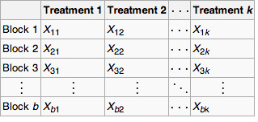{kind=link}
Cochran's $Q$ test assumes that there are $k > 2$ experimental treatments and that the observations are arranged in $b$ blocks.
Cochran's $Q$ test is:
$H_0$ : The treatments are equally effective.
$H_a$ : There is a difference in effectiveness among treatments.
The Cochran's $Q$ test statistic is:
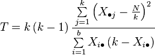{kind=link}
This is the equation for Cochran's $Q$ test statistic, where
where
- $k$ is the number of treatments
- X• j is the column total for the jth treatment
- b is the number of blocks
- Xi • is the row total for the ith block
- N is the grand total
For significance level $\alpha$ , the critical region is:
where ${ X }_{ 1-\alpha ,k-1 }$ is the $(1-\alpha)$ -quantile of the chi-squared distribution with $k-1$ degrees of freedom. The null hypothesis is rejected if the test statistic is in the critical region. If the Cochran test rejects the null hypothesis of equally effective treatments, pairwise multiple comparisons can be made by applying Cochran's $Q$ test on the two treatments of interest.
Cochran's $Q$ test is based on the following assumptions:
- A large sample approximation; in particular, it assumes that $b$ is "large."
- The blocks were randomly selected from the population of all possible blocks.
- The outcomes of the treatments can be coded as binary responses (i.e., a $0$ or $1$ ) in a way that is common to all treatments within each block.
The Friedman Test
The Friedman test is a non-parametric statistical test developed by the U.S. economist Milton Friedman. Similar to the parametric repeated measures ANOVA, it is used to detect differences in treatments across multiple test attempts. The procedure involves ranking each row (or block) together, then considering the values of ranks by columns.
Examples of use could include:
- $n$ wine judges each rate $k$ different wines. Are any wines ranked consistently higher or lower than the others?
- $n$ welders each use $k$ welding torches, and the ensuing welds were rated on quality. Do any of the torches produce consistently better or worse welds?
Method
1. Given data $\{ x_{ij} \} _{nxk}$ , that is, a matrix with $n$ rows (the blocks), $k$ columns (the treatments) and a single observation at the intersection of each block and treatment, calculate the ranks within each block. If there are tied values, assign to each tied value the average of the ranks that would have been assigned without ties. Replace the data with a new matrix $\{ r_{ij} \} _{nxk}$ where the entry $r_{ij}$ is the rank of $x_{ij}$ within block$r_{ij}$i.
2. Find the values:
3. The test statistic is given by $Q=\frac { { SS }_{ t } }{ { SS }_{ e } }$ . Note that the value of $Q$ as computed above does not need to be adjusted for tied values in the data.
4. Finally, when $n$ or $k$ is large (i.e. $n>15$ or $k > 4$ ), the probability distribution of $Q$ can be approximated by that of a chi-squared distribution. In this case the $p$ -value is given by $P\left( { \chi }_{ k-1 }^{ 2 }\ge Q \right)$ . If $n$ or $k$ is small, the approximation to chi-square becomes poor and the $p$ -value should be obtained from tables of $Q$ specially prepared for the Friedman test. If the $p$ -value is significant, appropriate post-hoc multiple comparisons tests would be performed.
13.4.7. Rank Correlation
A rank correlation is any of several statistics that measure the relationship between rankings.
Learning Objective
Evaluate the relationship between rankings of different ordinal variables using rank correlation
Key Points
- A rank correlation coefficient measures the degree of similarity between two rankings, and can be used to assess the significance of the relation between them.
- Kendall's tau ($\tau$ ) and Spearman's rho ($\rho$ ) are particular (and frequently used) cases of a general correlation coefficient.
- The measure of significance of the rank correlation coefficient can show whether the measured relationship is small enough to be likely to be a coincidence.
Key Terms
- concordant
- Agreeing; correspondent; in keeping with; agreeable with.
- rank correlation
- Any of several statistics that measure the relationship between rankings of different ordinal variables or different rankings of the same variable.
Rank Correlation
In statistics, a rank correlation is any of several statistics that measure the relationship between rankings of different ordinal variables or different rankings of the same variable, where a "ranking" is the assignment of the labels (e.g., first, second, third, etc.) to different observations of a particular variable. A rank correlation coefficient measures the degree of similarity between two rankings, and can be used to assess the significance of the relation between them.
If, for example, one variable is the identity of a college basketball program and another variable is the identity of a college football program, one could test for a relationship between the poll rankings of the two types of program: do colleges with a higher-ranked basketball program tend to have a higher-ranked football program? A rank correlation coefficient can measure that relationship, and the measure of significance of the rank correlation coefficient can show whether the measured relationship is small enough to be likely to be a coincidence.
If there is only one variable, the identity of a college football program, but it is subject to two different poll rankings (say, one by coaches and one by sportswriters), then the similarity of the two different polls' rankings can be measured with a rank correlation coefficient.
Some of the more popular rank correlation statistics include Spearman's rho ($\rho$ ) and Kendall's tau ($\tau$ ).
Spearman's $\rho$
Spearman developed a method of measuring rank correlation known as Spearman's rank correlation coefficient. It is generally denoted by $r_s$ . There are three cases when calculating Spearman's rank correlation coefficient:
- When ranks are given
- When ranks are not given
- Repeated ranks
The formula for calculating Spearman's rank correlation coefficient is:
where $n$ is the number of items or individuals being ranked and $d$ is $R_1 - R_2$ (where $R_1$ is the rank of items with respect to the first variable and $R_2$ is the rank of items with respect to the second variable).
Kendall's τ
The definition of the Kendall coefficient is as follows:
Let $(x_1, y_1), (x_2, y_2), \cdots, (x_n, y_n)$ be a set of observations of the joint random variables $X$ and $Y$, respectively, such that all the values of $x_i$ and $y_i$ are unique. Any pair of observations $(x_i,y_i)$ and $(x_j,y_j)$ follows these rules:
- The observations are sadi to be concordant if the ranks for both elements agree—that is, if both $x_i > x_j$ and $y_i > y_j$ , or if both $x_i < x_j$ and $y_i < y_j$ .
- The observations are said to be discordant if $x_i > x_j$ and $y_i < y_j$ , or if $x_i < x_j$ and $y_i > y_j$ .
- The observations are neither concordant nor discordant if $x_i = x_j$ or $y_i = y_j$ .
The Kendall $\tau$ coefficient is defined as follows:
$\displaystyle{\tau = \frac{(\text{number of concordant pairs}) - (\text{number of discordant pairs})}{\frac{1}{2} n (n-1)}}$
and has the following properties:
- The denominator is the total number pair combinations, so the coefficient must be in the range $-1 \leq \tau \leq 1$.
- If the agreement between the two rankings is perfect (i.e., the two rankings are the same) the coefficient has value $1$ .
- If the disagreement between the two rankings is perfect (i.e., one ranking is the reverse of the other) the coefficient has value $-1$ .
- If $X$ and $Y$ are independent, then we would expect the coefficient to be approximately zero.
Kendall's $\tau$ and Spearman's $\rho$ are particular cases of a general correlation coefficient.